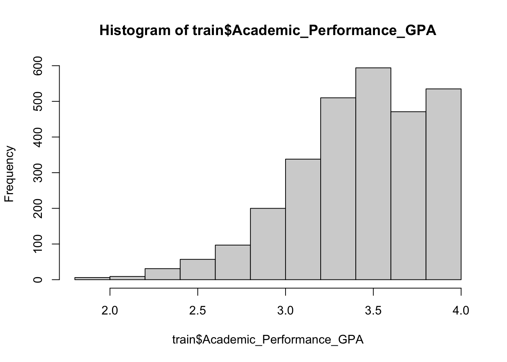
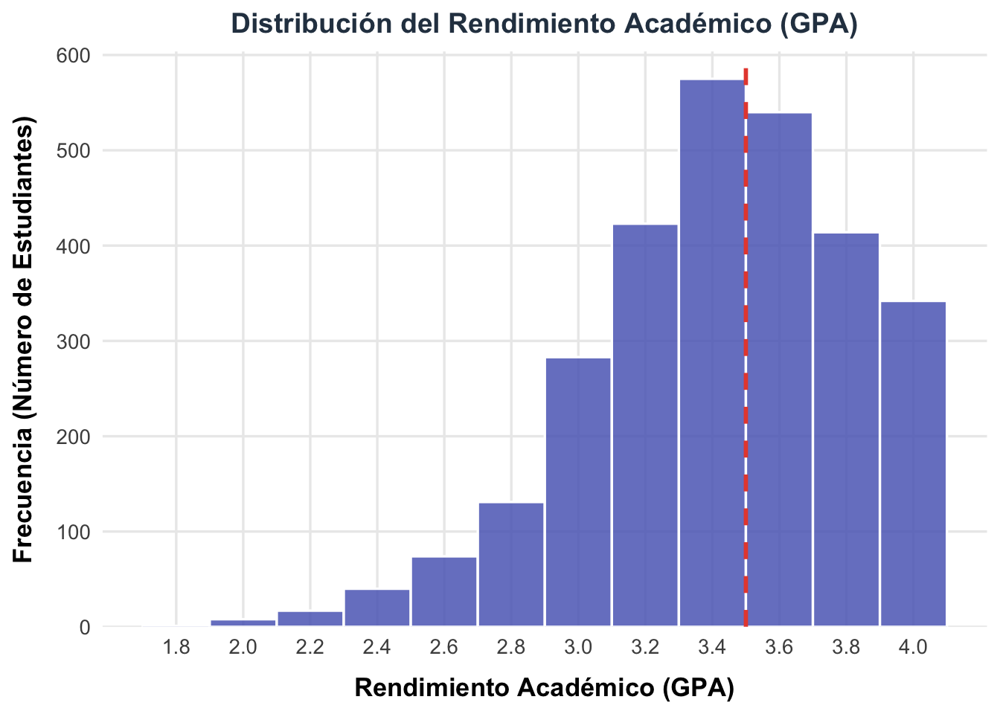
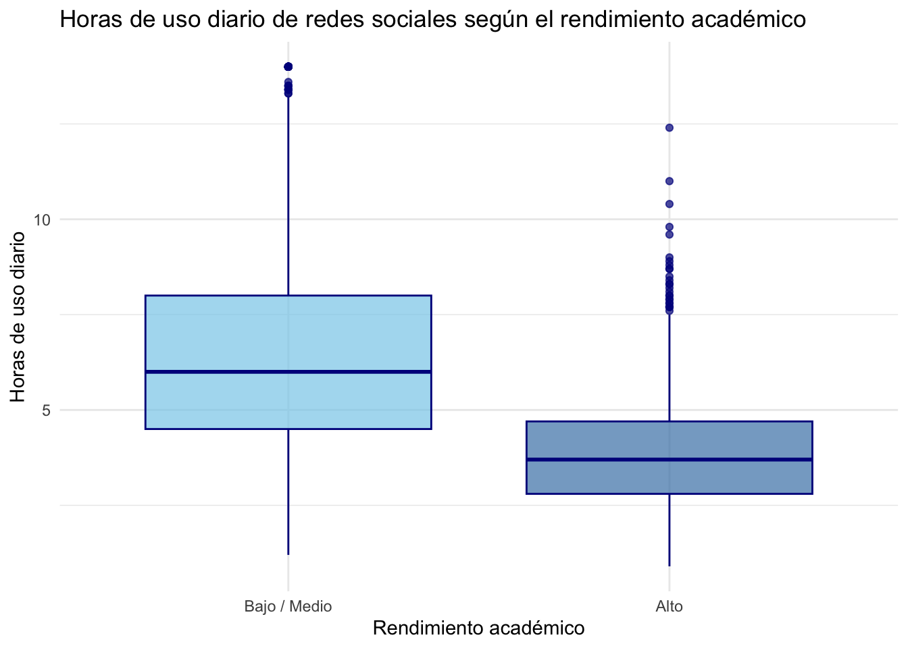
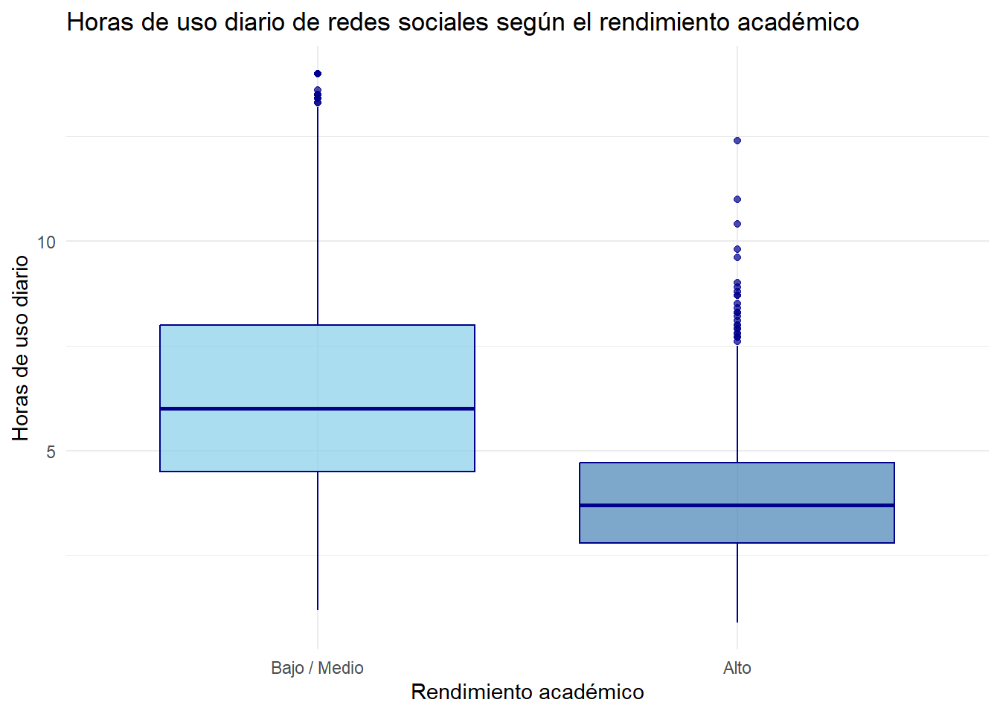
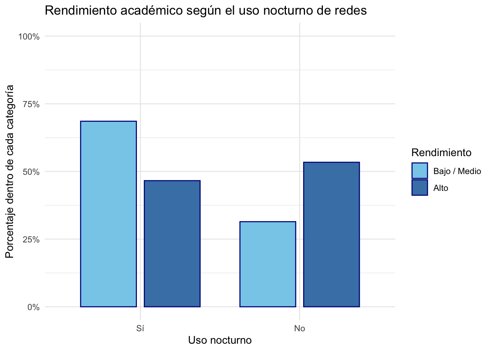
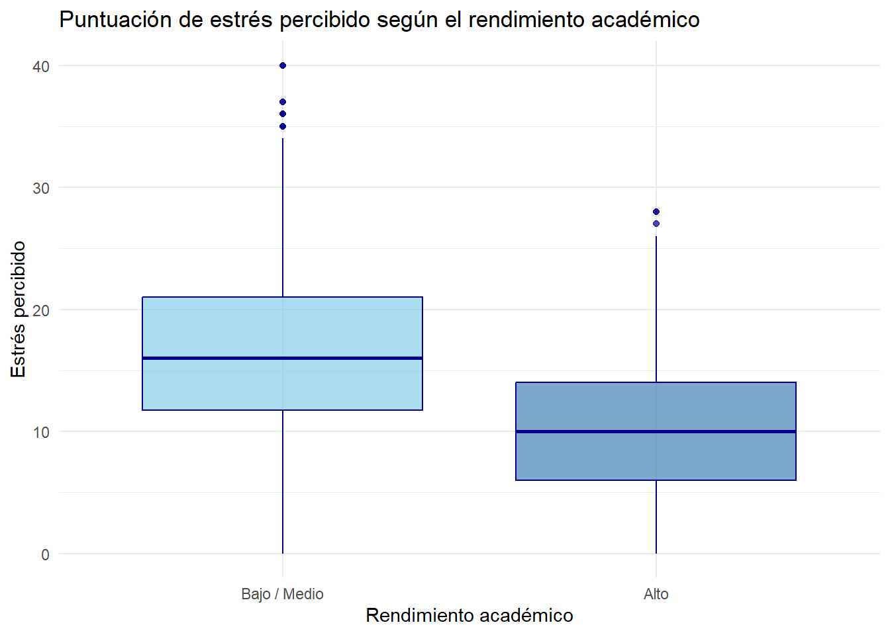
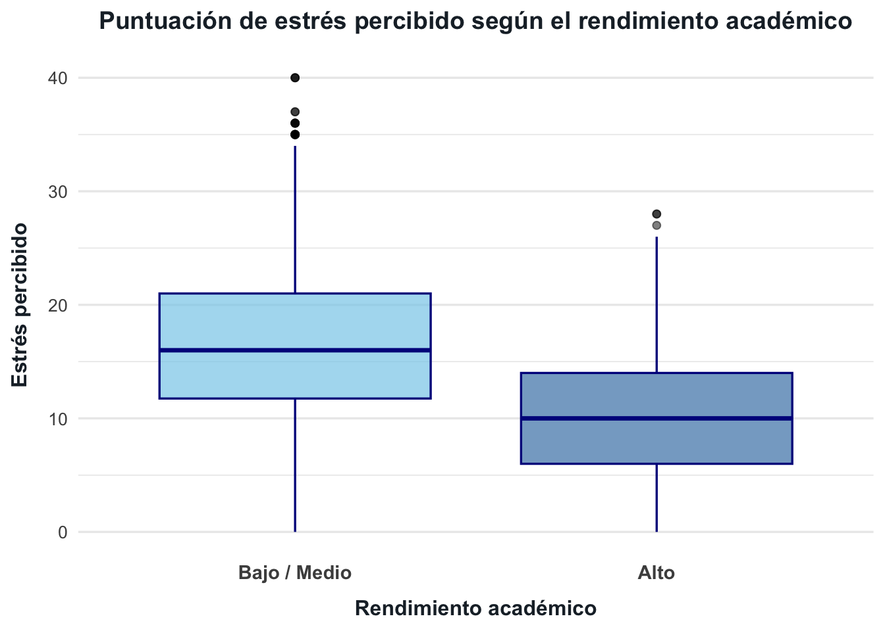
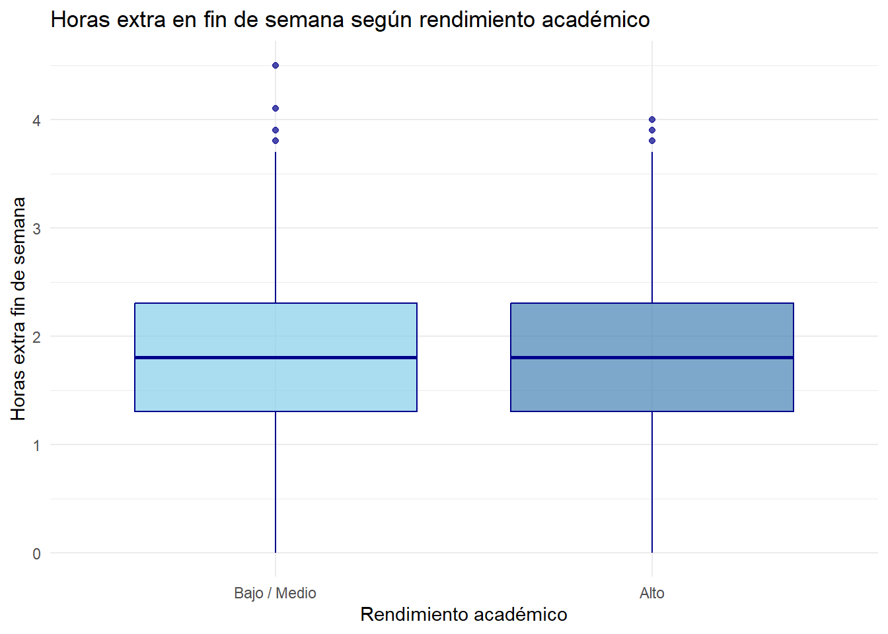
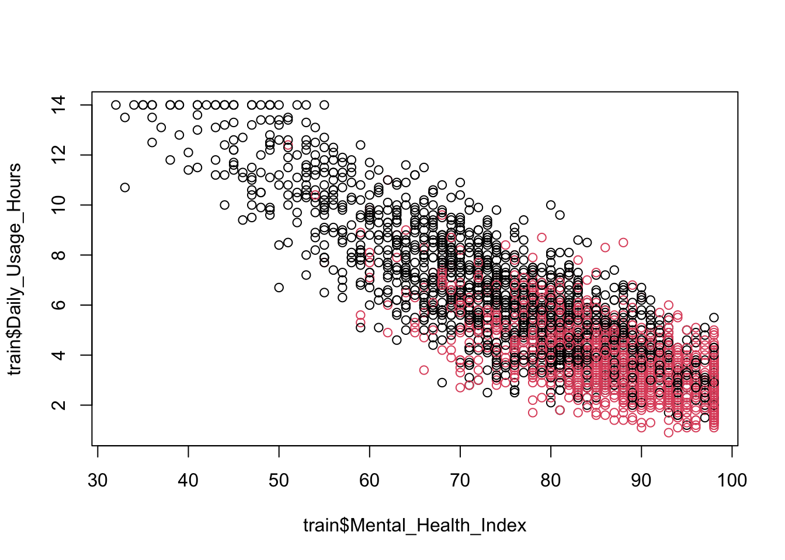

Informe
1 Introducción
Este trabajo aborda el análisis exploratorio de datos sobre el conjunto de datos Social_media_impact_on_life.csv. Cada observación representa a un estudiante y recopila información estructurada en cinco grandes bloques de variables: Identificación y demografía, hábitos tecnológicos, patrones de descanso, bienestar y salud mental, y rendimiento y resultado global.
El objetivo de nuestro proyecto es analizar y predecir el rendimiento académico de los alumnos.
2 Datos
El conjunto de datos analizado cuenta con un total de 4500 observaciones y 16 variables, abarcando la información estructural necesaria para el estudio.
A continuación, se presenta una tabla interactiva con una vista preliminar de los datos. Esta herramienta permite explorar las primeras filas de forma dinámica, facilitando la verificación inicial de los tipos de variables, la detección de posibles valores ausentes y la comprensión general de la estructura del dataset antes de proceder con los análisis estadísticos y los modelos.
3 Descripcion de las variables
- Student_ID: Identificador único (alfanumérico) asignado a cada alumno registrado en el estudio.
- Age: Edad del estudiante. Toma valores numéricos enteros.
- Academic_Level: Nivel académico o educativo. Variable categórica.
- Primary_Platform: Plataforma de redes sociales principal que utiliza el usuario. Variable categórica.
- Daily_Usage_Hours: Promedio de horas diarias dedicadas al uso de redes sociales, es una variable numérica continua.
- Weekend_Extra_Hours: Horas adicionales de consumo digital durante los findes de semana.
- Device_Type: Dispositivo principal desde el que accede a las redes, variable categórica.
- Sleep_Duration_Hours: Duración media del sueño por noche en horas. Variable numérica continua.
- Sleep_Quality_Score: Puntuación sobre la calidad del sueño. Toma valores numéricos enteros entre 1 y 5, donde los valores más bajos indican peor descanso.
- Late_Night_Usage: Indica si el usuario utiliza las redes sociales a altas horas de la noche. Es una variable booleana.
- Social_Comparison_Frequency: Frecuencia con la que el estudiante se compara con otros en las redes sociales, variable categórica.
- Perceived_Stress_Score: Nivel o puntuación de estrés. Es una variable numérica basada en escalas psicométricas.
- Mental_Health_Index: Índice general de salud mental del estudiante. Variable numérica.
- Academic_Performance_GPA: Calificación o promedio académico. Variable numérica continua.
- Overall_Impact: Variable objetivo o de salida que resume el impacto global de las redes sociales en la vida del usuario. Esta variable es categórica.
4 Estudio univariante
En esta sección realizamos una inspección descriptiva individual de todas las variables de nuestro conjunto de datos. Evaluamos las medidas de tendencia central (media y mediana), la dispersión y la distribución de frecuencias de factores demográficos, de descanso, psicológicos y de consumo digital.
| No | Variable | Stats / Values | Freqs (% of Valid) | Graph | Valid | Missing | |||||||||||||||||||||||||||||||||||||||||||||||||||||||
|---|---|---|---|---|---|---|---|---|---|---|---|---|---|---|---|---|---|---|---|---|---|---|---|---|---|---|---|---|---|---|---|---|---|---|---|---|---|---|---|---|---|---|---|---|---|---|---|---|---|---|---|---|---|---|---|---|---|---|---|---|---|
| 1 | Student_ID [character] |
|
|
![](data:image/png;base64,%20iVBORw0KGgoAAAANSUhEUgAAAKIAAAELCAQAAADwn5UCAAAD+mlDQ1BpY2MAADiNjVVdaBxVFD6bubMrJM6D1Kamkg7+NZS0bFLRhNro/mWzbdwsk2y0QZDJ7N2daSYz4/ykaSk+FEEQwajgk+D/W8EnIWqr7YstorRQogSDKPjQ+keh0hcJ67kzs7uTuGu9y9z55pzvfufec+7eC5C4LFuW3iUCLBquLeXT4rPH5sTEOnTBfdANfdAtK46VKpUmARvjwr/a7e8gxt7X9rf3/2frrlBHAYjdhdisOMoi4mUA/hXFsl2ABEH7yAnXYvgJxDtsnCDiEsO1AFcYng/wss+ZkTKIX0UsKKqM/sTbiAfnI/ZaBAdz8NuOPDWorSkiy0XJNquaTiPTvYP7f7ZF3WvE24NPj7MwfRTfA7j2lypyluGHEJ9V5Nx0iK8uabPFEP9luWkJ8SMAXbu8hXIK8T7EY1V7vBzodKmqN9HAK6fUmWcQ34N4dcE8ysbuRPy1MV+cCnV+UpwM5g8eAODiKi2wevcjHrBNaSqIy41XaDbH8oj4uOYWZgJ97i1naTrX0DmlZopBLO6L4/IRVqc+xFepnpdC/V8ttxTGJT2GXpwMdMgwdfz1+nZXnZkI4pI5FwsajCUvVrXxQsh/V7UnpBBftnR/j+LcyE3bk8oBn7+fGuVQkx+T7Vw+xBWYjclAwYR57BUwYBNEkCAPaXxbYKOnChroaKHopWih+NXg7N/CKfn+ALdUav7I6+jRMEKm/yPw0KrC72hVI7wMfnloq3XQCWZwI9QxSS9JkoP4HCKT5DAZIaMgkifJU2SMZNE6Sg41x5Yic2TzudHUeQEjUp83i7yL6HdBxv5nZJjgtM/FSp83ENjP2M9rypXXbl46fW5Xi7tGVp+71nPpdCRnGmotdMja1J1yz//CX+fXsF/nN1oM/gd+A3/r21a3Nes0zFYKfbpvW8RH8z1OZD6lLVVsYbOjolk1VvoCH8sAfbl4uwhnBlv85PfJP5JryfeSHyZ/497kPuHOc59yn3HfgMhd4C5yX3JfcR9zn0dq1HnvNGvur6OxCuZpl1Hcn0Ja2C08KGSFPcLDwmRLT+gVhoQJYS96djerE40XXbsGx7BvZKt9rIAXqXPsbqyz1uE/VEaWBid8puPvMwNObuOEI0k/GSKFbbt6hO31pnZ+Sz3ar4HGc/FsPAVifF98ND4UP8Jwgxnfi75R7PHUcumyyw7ijGmdtLWa6orDyeTjYgqvMioWDOXAoCjruui7HNGmDrWXaOUAsHsyOMJvSf79F9t5pWVznwY4/Cc791q2OQ/grAPQ+2jLNoBn473vAKw+pnj2UngnxGLfAjjVg8PBV08az6sf6/VbeG4l3gDYfL1e//v9en3zA9TfALig/wP/JXgLtNfFGQAAACBjSFJNAAB6JgAAgIQAAPoAAACA6AAAdTAAAOpgAAA6mAAAF3CculE8AAAAAmJLR0QA/4ePzL8AAAAHdElNRQfqChEVHhQNaDAmAAACpklEQVR42u3ZQUrDYBRGUSPdoytzEVllO/3jSF8uhNRzHBWhhMurBb/t+cFZn1c/wDsQMSBi4bn8fPsD+WtrN5cYEDEgYkDEgIgBEQMiBkQMiBgQMSBiQMSAiAERAyIGRAyIGBAxIGJAxMC2blPb1U9zI2s3lxgQMXCIaHeecYkBEQMiBkQMiBgQMSBiQMSAiAERAyIGRAyIGBAxIGJAxICIAREDIgZEDNidh+zOMREDdueASwyIGBAxIGJAxICIAREDIgZEDIgYEDEgYkDEgIgBEQMiBkQMiBgQMSBiwO48ZHeOiRiwOwdcYkDEgIgBEQMiBkQMiBgQMSBiQMSAiAERAyIGRAyIGBAxIGJAxICIAZPpkMk0JmJAxIDdOeASAyIGRAyIGBAxIGJAxICIAREDIgZEDIgYEDEgYkDEgIgBEQMiBkQM2J2H7M4xEQMm04BLDIgYEDEgYkDEgIgBEQMiBkQMiBgQMSBiQMSAiAERAyIGRAyIGBAxIGLA7jxkd46JGLA7B1xiQMSAiAERAyIGRAyIGBAxIGJAxICIAREDIgZEDIgYEDEgYkDEgIgBEQN25yG7c0zEgN054BIDIgZEDIgYEDEgYkDEgIgBEQMiBkQMiBgQMSBiQMSAiAERAyIGRAyIGLA7D9mdYyIG7M4BlxgQMSBiQMSAiAERAyIGRAyIGBAxIGJAxICIAREDIgZEDIgYEDEgYkDEgN15yO4cEzFgdw64xICIAREDIgZEDIgYEDEgYkDEgIgBEQMiBkQMiBgQMSBiQMSAiAERAybTIZNpTMSAiIHH+sLu/AfLF8jj+Juvqx/tJvbDKx/ngIgBEQMiBkQMiBgQMSBiQMSAiAERAyIGRAyIGBAxIGJAxMCP/2zvs3f55zazynk+zgERAyIGXrepNv30lDu8AAAAPXRFWHRpY2M6Y29weXJpZ2h0AENvcHlyaWdodCAyMDA3IEFwcGxlIEluYy4sIGFsbCByaWdodHMgcmVzZXJ2ZWQunmbcKQAAACN0RVh0aWNjOmRlc2NyaXB0aW9uAEdlbmVyaWMgUkdCIFByb2ZpbGUapziOAAAAAElFTkSuQmCC) |
4500 (100.0%) | 0 (0.0%) | |||||||||||||||||||||||||||||||||||||||||||||||||||||||
| 2 | Age [integer] |
|
12 distinct values | ![](data:image/png;base64,%20iVBORw0KGgoAAAANSUhEUgAAAJgAAABuCAQAAABxABKuAAAD+mlDQ1BpY2MAADiNjVVdaBxVFD6bubMrJM6D1Kamkg7+NZS0bFLRhNro/mWzbdwsk2y0QZDJ7N2daSYz4/ykaSk+FEEQwajgk+D/W8EnIWqr7YstorRQogSDKPjQ+keh0hcJ67kzs7uTuGu9y9z55pzvfufec+7eC5C4LFuW3iUCLBquLeXT4rPH5sTEOnTBfdANfdAtK46VKpUmARvjwr/a7e8gxt7X9rf3/2frrlBHAYjdhdisOMoi4mUA/hXFsl2ABEH7yAnXYvgJxDtsnCDiEsO1AFcYng/wss+ZkTKIX0UsKKqM/sTbiAfnI/ZaBAdz8NuOPDWorSkiy0XJNquaTiPTvYP7f7ZF3WvE24NPj7MwfRTfA7j2lypyluGHEJ9V5Nx0iK8uabPFEP9luWkJ8SMAXbu8hXIK8T7EY1V7vBzodKmqN9HAK6fUmWcQ34N4dcE8ysbuRPy1MV+cCnV+UpwM5g8eAODiKi2wevcjHrBNaSqIy41XaDbH8oj4uOYWZgJ97i1naTrX0DmlZopBLO6L4/IRVqc+xFepnpdC/V8ttxTGJT2GXpwMdMgwdfz1+nZXnZkI4pI5FwsajCUvVrXxQsh/V7UnpBBftnR/j+LcyE3bk8oBn7+fGuVQkx+T7Vw+xBWYjclAwYR57BUwYBNEkCAPaXxbYKOnChroaKHopWih+NXg7N/CKfn+ALdUav7I6+jRMEKm/yPw0KrC72hVI7wMfnloq3XQCWZwI9QxSS9JkoP4HCKT5DAZIaMgkifJU2SMZNE6Sg41x5Yic2TzudHUeQEjUp83i7yL6HdBxv5nZJjgtM/FSp83ENjP2M9rypXXbl46fW5Xi7tGVp+71nPpdCRnGmotdMja1J1yz//CX+fXsF/nN1oM/gd+A3/r21a3Nes0zFYKfbpvW8RH8z1OZD6lLVVsYbOjolk1VvoCH8sAfbl4uwhnBlv85PfJP5JryfeSHyZ/497kPuHOc59yn3HfgMhd4C5yX3JfcR9zn0dq1HnvNGvur6OxCuZpl1Hcn0Ja2C08KGSFPcLDwmRLT+gVhoQJYS96djerE40XXbsGx7BvZKt9rIAXqXPsbqyz1uE/VEaWBid8puPvMwNObuOEI0k/GSKFbbt6hO31pnZ+Sz3ar4HGc/FsPAVifF98ND4UP8Jwgxnfi75R7PHUcumyyw7ijGmdtLWa6orDyeTjYgqvMioWDOXAoCjruui7HNGmDrWXaOUAsHsyOMJvSf79F9t5pWVznwY4/Cc791q2OQ/grAPQ+2jLNoBn473vAKw+pnj2UngnxGLfAjjVg8PBV08az6sf6/VbeG4l3gDYfL1e//v9en3zA9TfALig/wP/JXgLtNfFGQAAACBjSFJNAAB6JgAAgIQAAPoAAACA6AAAdTAAAOpgAAA6mAAAF3CculE8AAAAAmJLR0QA/4ePzL8AAAAHdElNRQfqChEVHhQNaDAmAAABoElEQVR42u3cUU7CQBRAUTHs0T3oenAPrlJ//KiGQS5Y6eA5f5pI5KbPdIapu/cHisdb/wKzESwSLNovv9jlHz+c+BP40l9uo5Zvcn/xq3x6Gnz/7dbvciVGMhIsEiwSLBIsEiwSLBIsEiwSLLp6aTQ2XmfOvMpcMdh9rjKNZCRYJFgkWCRYJFgkWCRYJFgkWCRYJFgkWCRYJFgkWCRYdOaO68HJzk9nb1Ef33Cee7v5EkYyEiwSLBIsEiwSLFrxk++x0V3dDEcIbhJs5ns6IxkJFgkWCRYJFgkWCRYJFgkWCRZ9WRrZuf/Zt7XkfR4V/01GMhIsEiwSLBIsEiwSLBIsEiwSLBIsEiwSLLrJJ98jM/wfgk0Fm2FzyUhGgkWCRYJFgkWCRYJFgkWCRYJFgkWCRYJFgkWCRYJFm9pAHNvO41yTBNvO41xGMhIsEiwSLBIsEiwSLJrkPmzk7w8XTB7s7w8XGMlo8itsbK1hvdtgaw3r3QarTj76uLgm/2GwUZrzrsl/GOy6raLdMverJ3KPel6M5E6jxn1YJFgkWPQBPK8mUjxQxnMAAAA9dEVYdGljYzpjb3B5cmlnaHQAQ29weXJpZ2h0IDIwMDcgQXBwbGUgSW5jLiwgYWxsIHJpZ2h0cyByZXNlcnZlZC6eZtwpAAAAI3RFWHRpY2M6ZGVzY3JpcHRpb24AR2VuZXJpYyBSR0IgUHJvZmlsZRqnOI4AAAAASUVORK5CYII=) |
4500 (100.0%) | 0 (0.0%) | |||||||||||||||||||||||||||||||||||||||||||||||||||||||
| 3 | Gender [factor] |
|
|
![](data:image/png;base64,%20iVBORw0KGgoAAAANSUhEUgAAAFcAAABmCAQAAAAU58XvAAAD+mlDQ1BpY2MAADiNjVVdaBxVFD6bubMrJM6D1Kamkg7+NZS0bFLRhNro/mWzbdwsk2y0QZDJ7N2daSYz4/ykaSk+FEEQwajgk+D/W8EnIWqr7YstorRQogSDKPjQ+keh0hcJ67kzs7uTuGu9y9z55pzvfufec+7eC5C4LFuW3iUCLBquLeXT4rPH5sTEOnTBfdANfdAtK46VKpUmARvjwr/a7e8gxt7X9rf3/2frrlBHAYjdhdisOMoi4mUA/hXFsl2ABEH7yAnXYvgJxDtsnCDiEsO1AFcYng/wss+ZkTKIX0UsKKqM/sTbiAfnI/ZaBAdz8NuOPDWorSkiy0XJNquaTiPTvYP7f7ZF3WvE24NPj7MwfRTfA7j2lypyluGHEJ9V5Nx0iK8uabPFEP9luWkJ8SMAXbu8hXIK8T7EY1V7vBzodKmqN9HAK6fUmWcQ34N4dcE8ysbuRPy1MV+cCnV+UpwM5g8eAODiKi2wevcjHrBNaSqIy41XaDbH8oj4uOYWZgJ97i1naTrX0DmlZopBLO6L4/IRVqc+xFepnpdC/V8ttxTGJT2GXpwMdMgwdfz1+nZXnZkI4pI5FwsajCUvVrXxQsh/V7UnpBBftnR/j+LcyE3bk8oBn7+fGuVQkx+T7Vw+xBWYjclAwYR57BUwYBNEkCAPaXxbYKOnChroaKHopWih+NXg7N/CKfn+ALdUav7I6+jRMEKm/yPw0KrC72hVI7wMfnloq3XQCWZwI9QxSS9JkoP4HCKT5DAZIaMgkifJU2SMZNE6Sg41x5Yic2TzudHUeQEjUp83i7yL6HdBxv5nZJjgtM/FSp83ENjP2M9rypXXbl46fW5Xi7tGVp+71nPpdCRnGmotdMja1J1yz//CX+fXsF/nN1oM/gd+A3/r21a3Nes0zFYKfbpvW8RH8z1OZD6lLVVsYbOjolk1VvoCH8sAfbl4uwhnBlv85PfJP5JryfeSHyZ/497kPuHOc59yn3HfgMhd4C5yX3JfcR9zn0dq1HnvNGvur6OxCuZpl1Hcn0Ja2C08KGSFPcLDwmRLT+gVhoQJYS96djerE40XXbsGx7BvZKt9rIAXqXPsbqyz1uE/VEaWBid8puPvMwNObuOEI0k/GSKFbbt6hO31pnZ+Sz3ar4HGc/FsPAVifF98ND4UP8Jwgxnfi75R7PHUcumyyw7ijGmdtLWa6orDyeTjYgqvMioWDOXAoCjruui7HNGmDrWXaOUAsHsyOMJvSf79F9t5pWVznwY4/Cc791q2OQ/grAPQ+2jLNoBn473vAKw+pnj2UngnxGLfAjjVg8PBV08az6sf6/VbeG4l3gDYfL1e//v9en3zA9TfALig/wP/JXgLtNfFGQAAACBjSFJNAAB6JgAAgIQAAPoAAACA6AAAdTAAAOpgAAA6mAAAF3CculE8AAAAAmJLR0QA/4ePzL8AAAAHdElNRQfqChEVHhQNaDAmAAAA3ElEQVR42u3aUQqCQBSGUSfao3uo9dQeXGW9DZoOhKhzL5zvrZc4xC3wp/IZMnXrDcCN033+4h3ykB+lwR2Gsbdt1bR4lewYcHFxcXFxcXFxe4eLW/t5+Jn2vctllfnTZNn9Nmc2FyY7hmTcxe2+wuwMz8ZdhtwZ2l/4ZMeAi4uLi4uLi4vbO1zcmp3h6OwMuJs1ZpFnzDPenkXi/j4kOwZcXFxcXFxcXNze4eLWzCJHZxa5qs2dIerKsPp0xyB/wPiTGz1cXFxcXFxcXNze4eLWMu8M8Ut2DLhn9gVrExcr5n9DqAAAAD10RVh0aWNjOmNvcHlyaWdodABDb3B5cmlnaHQgMjAwNyBBcHBsZSBJbmMuLCBhbGwgcmlnaHRzIHJlc2VydmVkLp5m3CkAAAAjdEVYdGljYzpkZXNjcmlwdGlvbgBHZW5lcmljIFJHQiBQcm9maWxlGqc4jgAAAABJRU5ErkJggg==) |
4500 (100.0%) | 0 (0.0%) | |||||||||||||||||||||||||||||||||||||||||||||||||||||||
| 4 | Academic_Level [ordered, factor] |
|
|
![](data:image/png;base64,%20iVBORw0KGgoAAAANSUhEUgAAAGkAAABOCAQAAACJIvA/AAAD+mlDQ1BpY2MAADiNjVVdaBxVFD6bubMrJM6D1Kamkg7+NZS0bFLRhNro/mWzbdwsk2y0QZDJ7N2daSYz4/ykaSk+FEEQwajgk+D/W8EnIWqr7YstorRQogSDKPjQ+keh0hcJ67kzs7uTuGu9y9z55pzvfufec+7eC5C4LFuW3iUCLBquLeXT4rPH5sTEOnTBfdANfdAtK46VKpUmARvjwr/a7e8gxt7X9rf3/2frrlBHAYjdhdisOMoi4mUA/hXFsl2ABEH7yAnXYvgJxDtsnCDiEsO1AFcYng/wss+ZkTKIX0UsKKqM/sTbiAfnI/ZaBAdz8NuOPDWorSkiy0XJNquaTiPTvYP7f7ZF3WvE24NPj7MwfRTfA7j2lypyluGHEJ9V5Nx0iK8uabPFEP9luWkJ8SMAXbu8hXIK8T7EY1V7vBzodKmqN9HAK6fUmWcQ34N4dcE8ysbuRPy1MV+cCnV+UpwM5g8eAODiKi2wevcjHrBNaSqIy41XaDbH8oj4uOYWZgJ97i1naTrX0DmlZopBLO6L4/IRVqc+xFepnpdC/V8ttxTGJT2GXpwMdMgwdfz1+nZXnZkI4pI5FwsajCUvVrXxQsh/V7UnpBBftnR/j+LcyE3bk8oBn7+fGuVQkx+T7Vw+xBWYjclAwYR57BUwYBNEkCAPaXxbYKOnChroaKHopWih+NXg7N/CKfn+ALdUav7I6+jRMEKm/yPw0KrC72hVI7wMfnloq3XQCWZwI9QxSS9JkoP4HCKT5DAZIaMgkifJU2SMZNE6Sg41x5Yic2TzudHUeQEjUp83i7yL6HdBxv5nZJjgtM/FSp83ENjP2M9rypXXbl46fW5Xi7tGVp+71nPpdCRnGmotdMja1J1yz//CX+fXsF/nN1oM/gd+A3/r21a3Nes0zFYKfbpvW8RH8z1OZD6lLVVsYbOjolk1VvoCH8sAfbl4uwhnBlv85PfJP5JryfeSHyZ/497kPuHOc59yn3HfgMhd4C5yX3JfcR9zn0dq1HnvNGvur6OxCuZpl1Hcn0Ja2C08KGSFPcLDwmRLT+gVhoQJYS96djerE40XXbsGx7BvZKt9rIAXqXPsbqyz1uE/VEaWBid8puPvMwNObuOEI0k/GSKFbbt6hO31pnZ+Sz3ar4HGc/FsPAVifF98ND4UP8Jwgxnfi75R7PHUcumyyw7ijGmdtLWa6orDyeTjYgqvMioWDOXAoCjruui7HNGmDrWXaOUAsHsyOMJvSf79F9t5pWVznwY4/Cc791q2OQ/grAPQ+2jLNoBn473vAKw+pnj2UngnxGLfAjjVg8PBV08az6sf6/VbeG4l3gDYfL1e//v9en3zA9TfALig/wP/JXgLtNfFGQAAACBjSFJNAAB6JgAAgIQAAPoAAACA6AAAdTAAAOpgAAA6mAAAF3CculE8AAAAAmJLR0QA/4ePzL8AAAAHdElNRQfqChEVHhQNaDAmAAAA0klEQVR42u3awQ3CMBAFURulR4qgHuiBKuFq58JpF+Yzc4uQojxpHSkr5mukdfn2A0j6T9KxXjwaDtZtVtx1ffBj/+laDHoW33+MyMGTREgSIUmEJBGSREgSIUmEJBEKJJ0+1Ds+pKub6yKiZNPR0qoIHLxA0naW7twF+XJmmvd4Ne0vtcDBk0RIEiFJhCQRkkRIEiFJhCQRCiS5x/vV3OPRCiR9WE3W/CGwkXReTTLff4GDJ4mQJEKSCEkiJImQJEKSCEkiFEhKX01mFDh4kgi9AbCpEje7M3wDAAAAPXRFWHRpY2M6Y29weXJpZ2h0AENvcHlyaWdodCAyMDA3IEFwcGxlIEluYy4sIGFsbCByaWdodHMgcmVzZXJ2ZWQunmbcKQAAACN0RVh0aWNjOmRlc2NyaXB0aW9uAEdlbmVyaWMgUkdCIFByb2ZpbGUapziOAAAAAElFTkSuQmCC) |
4500 (100.0%) | 0 (0.0%) | |||||||||||||||||||||||||||||||||||||||||||||||||||||||
| 5 | Primary_Platform [factor] |
|
|
![](data:image/png;base64,%20iVBORw0KGgoAAAANSUhEUgAAAD0AAACsCAQAAABiUWyEAAAD+mlDQ1BpY2MAADiNjVVdaBxVFD6bubMrJM6D1Kamkg7+NZS0bFLRhNro/mWzbdwsk2y0QZDJ7N2daSYz4/ykaSk+FEEQwajgk+D/W8EnIWqr7YstorRQogSDKPjQ+keh0hcJ67kzs7uTuGu9y9z55pzvfufec+7eC5C4LFuW3iUCLBquLeXT4rPH5sTEOnTBfdANfdAtK46VKpUmARvjwr/a7e8gxt7X9rf3/2frrlBHAYjdhdisOMoi4mUA/hXFsl2ABEH7yAnXYvgJxDtsnCDiEsO1AFcYng/wss+ZkTKIX0UsKKqM/sTbiAfnI/ZaBAdz8NuOPDWorSkiy0XJNquaTiPTvYP7f7ZF3WvE24NPj7MwfRTfA7j2lypyluGHEJ9V5Nx0iK8uabPFEP9luWkJ8SMAXbu8hXIK8T7EY1V7vBzodKmqN9HAK6fUmWcQ34N4dcE8ysbuRPy1MV+cCnV+UpwM5g8eAODiKi2wevcjHrBNaSqIy41XaDbH8oj4uOYWZgJ97i1naTrX0DmlZopBLO6L4/IRVqc+xFepnpdC/V8ttxTGJT2GXpwMdMgwdfz1+nZXnZkI4pI5FwsajCUvVrXxQsh/V7UnpBBftnR/j+LcyE3bk8oBn7+fGuVQkx+T7Vw+xBWYjclAwYR57BUwYBNEkCAPaXxbYKOnChroaKHopWih+NXg7N/CKfn+ALdUav7I6+jRMEKm/yPw0KrC72hVI7wMfnloq3XQCWZwI9QxSS9JkoP4HCKT5DAZIaMgkifJU2SMZNE6Sg41x5Yic2TzudHUeQEjUp83i7yL6HdBxv5nZJjgtM/FSp83ENjP2M9rypXXbl46fW5Xi7tGVp+71nPpdCRnGmotdMja1J1yz//CX+fXsF/nN1oM/gd+A3/r21a3Nes0zFYKfbpvW8RH8z1OZD6lLVVsYbOjolk1VvoCH8sAfbl4uwhnBlv85PfJP5JryfeSHyZ/497kPuHOc59yn3HfgMhd4C5yX3JfcR9zn0dq1HnvNGvur6OxCuZpl1Hcn0Ja2C08KGSFPcLDwmRLT+gVhoQJYS96djerE40XXbsGx7BvZKt9rIAXqXPsbqyz1uE/VEaWBid8puPvMwNObuOEI0k/GSKFbbt6hO31pnZ+Sz3ar4HGc/FsPAVifF98ND4UP8Jwgxnfi75R7PHUcumyyw7ijGmdtLWa6orDyeTjYgqvMioWDOXAoCjruui7HNGmDrWXaOUAsHsyOMJvSf79F9t5pWVznwY4/Cc791q2OQ/grAPQ+2jLNoBn473vAKw+pnj2UngnxGLfAjjVg8PBV08az6sf6/VbeG4l3gDYfL1e//v9en3zA9TfALig/wP/JXgLtNfFGQAAACBjSFJNAAB6JgAAgIQAAPoAAACA6AAAdTAAAOpgAAA6mAAAF3CculE8AAAAAmJLR0QA/4ePzL8AAAAHdElNRQfqChEVHhQNaDAmAAABCElEQVR42u3aQQ6CMBQEUGq8o3fQ8+AdOKVuXCDGAg0tP+mbHRtfzHQxaZpew1m5nCZ3Sl/nH8/qxd/TH3oYblXh6eurz67RaDQajUZvzGKlTGW/UpQ0n2Op+Ge2Zq712XWUYzZ+qnjUL/33X98qL/EM3TJoNBqNRqPj03Z440TpelxcStcdxZlL6dpHrs+u0Wg0Go1Gx6ft8MaJ0vW48jjk2F2+43HI0Uewz67RaDQajUbHp+3wxonS9doO35/ccq/6SDt/aPvsGo1Go9FodHzaDm+cKF17l1I/aDQajUaj0ZnY4Y0TpevS+/CyvX7AfXjp0eyzazQajUaj0fHpKDu8bfrs+kT6DZdCKL7SAoQdAAAAPXRFWHRpY2M6Y29weXJpZ2h0AENvcHlyaWdodCAyMDA3IEFwcGxlIEluYy4sIGFsbCByaWdodHMgcmVzZXJ2ZWQunmbcKQAAACN0RVh0aWNjOmRlc2NyaXB0aW9uAEdlbmVyaWMgUkdCIFByb2ZpbGUapziOAAAAAElFTkSuQmCC) |
4500 (100.0%) | 0 (0.0%) | |||||||||||||||||||||||||||||||||||||||||||||||||||||||
| 6 | Daily_Usage_Hours [numeric] |
|
129 distinct values | ![](data:image/png;base64,%20iVBORw0KGgoAAAANSUhEUgAAAJgAAABuCAQAAABxABKuAAAD+mlDQ1BpY2MAADiNjVVdaBxVFD6bubMrJM6D1Kamkg7+NZS0bFLRhNro/mWzbdwsk2y0QZDJ7N2daSYz4/ykaSk+FEEQwajgk+D/W8EnIWqr7YstorRQogSDKPjQ+keh0hcJ67kzs7uTuGu9y9z55pzvfufec+7eC5C4LFuW3iUCLBquLeXT4rPH5sTEOnTBfdANfdAtK46VKpUmARvjwr/a7e8gxt7X9rf3/2frrlBHAYjdhdisOMoi4mUA/hXFsl2ABEH7yAnXYvgJxDtsnCDiEsO1AFcYng/wss+ZkTKIX0UsKKqM/sTbiAfnI/ZaBAdz8NuOPDWorSkiy0XJNquaTiPTvYP7f7ZF3WvE24NPj7MwfRTfA7j2lypyluGHEJ9V5Nx0iK8uabPFEP9luWkJ8SMAXbu8hXIK8T7EY1V7vBzodKmqN9HAK6fUmWcQ34N4dcE8ysbuRPy1MV+cCnV+UpwM5g8eAODiKi2wevcjHrBNaSqIy41XaDbH8oj4uOYWZgJ97i1naTrX0DmlZopBLO6L4/IRVqc+xFepnpdC/V8ttxTGJT2GXpwMdMgwdfz1+nZXnZkI4pI5FwsajCUvVrXxQsh/V7UnpBBftnR/j+LcyE3bk8oBn7+fGuVQkx+T7Vw+xBWYjclAwYR57BUwYBNEkCAPaXxbYKOnChroaKHopWih+NXg7N/CKfn+ALdUav7I6+jRMEKm/yPw0KrC72hVI7wMfnloq3XQCWZwI9QxSS9JkoP4HCKT5DAZIaMgkifJU2SMZNE6Sg41x5Yic2TzudHUeQEjUp83i7yL6HdBxv5nZJjgtM/FSp83ENjP2M9rypXXbl46fW5Xi7tGVp+71nPpdCRnGmotdMja1J1yz//CX+fXsF/nN1oM/gd+A3/r21a3Nes0zFYKfbpvW8RH8z1OZD6lLVVsYbOjolk1VvoCH8sAfbl4uwhnBlv85PfJP5JryfeSHyZ/497kPuHOc59yn3HfgMhd4C5yX3JfcR9zn0dq1HnvNGvur6OxCuZpl1Hcn0Ja2C08KGSFPcLDwmRLT+gVhoQJYS96djerE40XXbsGx7BvZKt9rIAXqXPsbqyz1uE/VEaWBid8puPvMwNObuOEI0k/GSKFbbt6hO31pnZ+Sz3ar4HGc/FsPAVifF98ND4UP8Jwgxnfi75R7PHUcumyyw7ijGmdtLWa6orDyeTjYgqvMioWDOXAoCjruui7HNGmDrWXaOUAsHsyOMJvSf79F9t5pWVznwY4/Cc791q2OQ/grAPQ+2jLNoBn473vAKw+pnj2UngnxGLfAjjVg8PBV08az6sf6/VbeG4l3gDYfL1e//v9en3zA9TfALig/wP/JXgLtNfFGQAAACBjSFJNAAB6JgAAgIQAAPoAAACA6AAAdTAAAOpgAAA6mAAAF3CculE8AAAAAmJLR0QA/4ePzL8AAAAHdElNRQfqChEVHhQNaDAmAAABs0lEQVR42u3cQU7DMBBAUYJ6R+5Az9PeoaeErdVM1Xy3bmbi/3awiOhXxgk2Yvn7EvG99w9QjcEgg0Gn9ovlhQtdwsXw/Mol02g/2qn7Kis/q+/c9v6kAziSkMEgg0FvXMMi0aOg9oNgcLDjPQgcSchgkMEgg0EGgwwGGQwyGGQwyGCQwSCDQQaDDAYZDDIYZDDIYFDXFvVl4r9g6dzTP95e/VaDD0EitU+SdghW++500YcMBhkMMhhkMMhgkMEgg0EGgwwGGQwyGGQwyGCQwSCDQQaDDAYZDDIYZDDIYNAOx2yROmeVSYLVOat0JCGDQQaDDAYZDDIYZDDIYJDBIINBBoMMBhkMMhiUZHsnst4jy7BDljjY/R5Zjh0yRxIyGGQwyGCQwSCDQQaDDAYlfnFdy3A+XipYhvNxRxIyGPR0JGf+HxWRDWtYhpUjD0cSMhhU6rUi8ul3s/LBPr3COpKQwSCDQeXXsMjIB8Ehg418EBwyWL8Hvwg2d+c0wbaO6bO7c5pg7xpTn5LQNHdYpGfraupgPWPqSEIGgwwGLe26d3X/PvTbvK8tNmIcSchgkMGgf9mPLFoT9OaMAAAAPXRFWHRpY2M6Y29weXJpZ2h0AENvcHlyaWdodCAyMDA3IEFwcGxlIEluYy4sIGFsbCByaWdodHMgcmVzZXJ2ZWQunmbcKQAAACN0RVh0aWNjOmRlc2NyaXB0aW9uAEdlbmVyaWMgUkdCIFByb2ZpbGUapziOAAAAAElFTkSuQmCC) |
4500 (100.0%) | 0 (0.0%) | |||||||||||||||||||||||||||||||||||||||||||||||||||||||
| 7 | Weekend_Extra_Hours [numeric] |
|
43 distinct values | ![](data:image/png;base64,%20iVBORw0KGgoAAAANSUhEUgAAAJgAAABuCAQAAABxABKuAAAD+mlDQ1BpY2MAADiNjVVdaBxVFD6bubMrJM6D1Kamkg7+NZS0bFLRhNro/mWzbdwsk2y0QZDJ7N2daSYz4/ykaSk+FEEQwajgk+D/W8EnIWqr7YstorRQogSDKPjQ+keh0hcJ67kzs7uTuGu9y9z55pzvfufec+7eC5C4LFuW3iUCLBquLeXT4rPH5sTEOnTBfdANfdAtK46VKpUmARvjwr/a7e8gxt7X9rf3/2frrlBHAYjdhdisOMoi4mUA/hXFsl2ABEH7yAnXYvgJxDtsnCDiEsO1AFcYng/wss+ZkTKIX0UsKKqM/sTbiAfnI/ZaBAdz8NuOPDWorSkiy0XJNquaTiPTvYP7f7ZF3WvE24NPj7MwfRTfA7j2lypyluGHEJ9V5Nx0iK8uabPFEP9luWkJ8SMAXbu8hXIK8T7EY1V7vBzodKmqN9HAK6fUmWcQ34N4dcE8ysbuRPy1MV+cCnV+UpwM5g8eAODiKi2wevcjHrBNaSqIy41XaDbH8oj4uOYWZgJ97i1naTrX0DmlZopBLO6L4/IRVqc+xFepnpdC/V8ttxTGJT2GXpwMdMgwdfz1+nZXnZkI4pI5FwsajCUvVrXxQsh/V7UnpBBftnR/j+LcyE3bk8oBn7+fGuVQkx+T7Vw+xBWYjclAwYR57BUwYBNEkCAPaXxbYKOnChroaKHopWih+NXg7N/CKfn+ALdUav7I6+jRMEKm/yPw0KrC72hVI7wMfnloq3XQCWZwI9QxSS9JkoP4HCKT5DAZIaMgkifJU2SMZNE6Sg41x5Yic2TzudHUeQEjUp83i7yL6HdBxv5nZJjgtM/FSp83ENjP2M9rypXXbl46fW5Xi7tGVp+71nPpdCRnGmotdMja1J1yz//CX+fXsF/nN1oM/gd+A3/r21a3Nes0zFYKfbpvW8RH8z1OZD6lLVVsYbOjolk1VvoCH8sAfbl4uwhnBlv85PfJP5JryfeSHyZ/497kPuHOc59yn3HfgMhd4C5yX3JfcR9zn0dq1HnvNGvur6OxCuZpl1Hcn0Ja2C08KGSFPcLDwmRLT+gVhoQJYS96djerE40XXbsGx7BvZKt9rIAXqXPsbqyz1uE/VEaWBid8puPvMwNObuOEI0k/GSKFbbt6hO31pnZ+Sz3ar4HGc/FsPAVifF98ND4UP8Jwgxnfi75R7PHUcumyyw7ijGmdtLWa6orDyeTjYgqvMioWDOXAoCjruui7HNGmDrWXaOUAsHsyOMJvSf79F9t5pWVznwY4/Cc791q2OQ/grAPQ+2jLNoBn473vAKw+pnj2UngnxGLfAjjVg8PBV08az6sf6/VbeG4l3gDYfL1e//v9en3zA9TfALig/wP/JXgLtNfFGQAAACBjSFJNAAB6JgAAgIQAAPoAAACA6AAAdTAAAOpgAAA6mAAAF3CculE8AAAAAmJLR0QA/4ePzL8AAAAHdElNRQfqChEVHhQNaDAmAAABgUlEQVR42u3cQU6DUBRAUTHdo3vQ9egeXKVO0Rh+jqUU6D2zpkkhN0AI75fp6yni+d47cDQFQwVDl/mH6YYbeh9eLN9uufmrzHf98u9fYS+L337epwXrlEQFQwVDBUMFQwVDBUMFQwVDBUMFQwVDBUMFQwVDBUMFQwVDBUMrPtMfjznOYNUhyNKYYzzkWA6+l5nShlOjketyb6VrGCoYKhgqGCoYKhgqGCoYKhgqGCoYKhgqGCoYKhgqGCoYKhgqGCoYKhgqGCoYKhgqGCoYKhgqGCoYKhgqGCoYKhgqGCoYKhja0aLgZaNF7Vutsj5MsL28uYeCPcZfF5bhEXaMtfS31EUfFQwVDBUMFQwVDBUMFQwVDBUMFQwVDBUMFQwVDBUMFQwVDBUMFQwVDBUMFQz9mEs2qB37Ncjdy0B+vzolUcHQYVbvjGz1ysnTBNtqmUynJCoYKhgqGCoYKhg6zW3FsvXu0h4k2Hp3adM8/UdPK/70OjsCpxqZLvqoYKhg6Bukrh2xn4ZcJAAAAD10RVh0aWNjOmNvcHlyaWdodABDb3B5cmlnaHQgMjAwNyBBcHBsZSBJbmMuLCBhbGwgcmlnaHRzIHJlc2VydmVkLp5m3CkAAAAjdEVYdGljYzpkZXNjcmlwdGlvbgBHZW5lcmljIFJHQiBQcm9maWxlGqc4jgAAAABJRU5ErkJggg==) |
4500 (100.0%) | 0 (0.0%) | |||||||||||||||||||||||||||||||||||||||||||||||||||||||
| 8 | Device_Type [factor] |
|
|
![](data:image/png;base64,%20iVBORw0KGgoAAAANSUhEUgAAAIoAAABOCAQAAABV90ZNAAAD+mlDQ1BpY2MAADiNjVVdaBxVFD6bubMrJM6D1Kamkg7+NZS0bFLRhNro/mWzbdwsk2y0QZDJ7N2daSYz4/ykaSk+FEEQwajgk+D/W8EnIWqr7YstorRQogSDKPjQ+keh0hcJ67kzs7uTuGu9y9z55pzvfufec+7eC5C4LFuW3iUCLBquLeXT4rPH5sTEOnTBfdANfdAtK46VKpUmARvjwr/a7e8gxt7X9rf3/2frrlBHAYjdhdisOMoi4mUA/hXFsl2ABEH7yAnXYvgJxDtsnCDiEsO1AFcYng/wss+ZkTKIX0UsKKqM/sTbiAfnI/ZaBAdz8NuOPDWorSkiy0XJNquaTiPTvYP7f7ZF3WvE24NPj7MwfRTfA7j2lypyluGHEJ9V5Nx0iK8uabPFEP9luWkJ8SMAXbu8hXIK8T7EY1V7vBzodKmqN9HAK6fUmWcQ34N4dcE8ysbuRPy1MV+cCnV+UpwM5g8eAODiKi2wevcjHrBNaSqIy41XaDbH8oj4uOYWZgJ97i1naTrX0DmlZopBLO6L4/IRVqc+xFepnpdC/V8ttxTGJT2GXpwMdMgwdfz1+nZXnZkI4pI5FwsajCUvVrXxQsh/V7UnpBBftnR/j+LcyE3bk8oBn7+fGuVQkx+T7Vw+xBWYjclAwYR57BUwYBNEkCAPaXxbYKOnChroaKHopWih+NXg7N/CKfn+ALdUav7I6+jRMEKm/yPw0KrC72hVI7wMfnloq3XQCWZwI9QxSS9JkoP4HCKT5DAZIaMgkifJU2SMZNE6Sg41x5Yic2TzudHUeQEjUp83i7yL6HdBxv5nZJjgtM/FSp83ENjP2M9rypXXbl46fW5Xi7tGVp+71nPpdCRnGmotdMja1J1yz//CX+fXsF/nN1oM/gd+A3/r21a3Nes0zFYKfbpvW8RH8z1OZD6lLVVsYbOjolk1VvoCH8sAfbl4uwhnBlv85PfJP5JryfeSHyZ/497kPuHOc59yn3HfgMhd4C5yX3JfcR9zn0dq1HnvNGvur6OxCuZpl1Hcn0Ja2C08KGSFPcLDwmRLT+gVhoQJYS96djerE40XXbsGx7BvZKt9rIAXqXPsbqyz1uE/VEaWBid8puPvMwNObuOEI0k/GSKFbbt6hO31pnZ+Sz3ar4HGc/FsPAVifF98ND4UP8Jwgxnfi75R7PHUcumyyw7ijGmdtLWa6orDyeTjYgqvMioWDOXAoCjruui7HNGmDrWXaOUAsHsyOMJvSf79F9t5pWVznwY4/Cc791q2OQ/grAPQ+2jLNoBn473vAKw+pnj2UngnxGLfAjjVg8PBV08az6sf6/VbeG4l3gDYfL1e//v9en3zA9TfALig/wP/JXgLtNfFGQAAACBjSFJNAAB6JgAAgIQAAPoAAACA6AAAdTAAAOpgAAA6mAAAF3CculE8AAAAAmJLR0QA/4ePzL8AAAAHdElNRQfqChEVHhQNaDAmAAABC0lEQVR42u3bUWrCQBRA0aa4RxfR9dQ9dJX604+J3NAoSkpyzp8IIbkwE5hHpusH9z63voH/SJQgSjiNPy6rN5ivaesbf7Xx0U/zv86rLvCz9RO8meUTRAmiBFGCKEGUIEoQJYgSRAmiBFGCKEGUIEoQJYgSRAl3x5F7P2hcZxoPbHd3Gv2AsYPlE0QJsz3l+8iD5WHveGrusz/zF4zlE0QJogRRgihBlCBKECWIEkQJogRRgihBlCBKECWIEkQJ5j7B3OeXuc8fRAmihIVh2P4+cnpEDsOO/g6yfIIoQZQgShAliBJECaIEUYIoQZQgShAliBJECaIEUYIowTAsTEf+cGOJ5RNECaKEG4gmEjc74YR6AAAAPXRFWHRpY2M6Y29weXJpZ2h0AENvcHlyaWdodCAyMDA3IEFwcGxlIEluYy4sIGFsbCByaWdodHMgcmVzZXJ2ZWQunmbcKQAAACN0RVh0aWNjOmRlc2NyaXB0aW9uAEdlbmVyaWMgUkdCIFByb2ZpbGUapziOAAAAAElFTkSuQmCC) |
4500 (100.0%) | 0 (0.0%) | |||||||||||||||||||||||||||||||||||||||||||||||||||||||
| 9 | Sleep_Duration_Hours [numeric] |
|
73 distinct values | ![](data:image/png;base64,%20iVBORw0KGgoAAAANSUhEUgAAAJgAAABuCAQAAABxABKuAAAD+mlDQ1BpY2MAADiNjVVdaBxVFD6bubMrJM6D1Kamkg7+NZS0bFLRhNro/mWzbdwsk2y0QZDJ7N2daSYz4/ykaSk+FEEQwajgk+D/W8EnIWqr7YstorRQogSDKPjQ+keh0hcJ67kzs7uTuGu9y9z55pzvfufec+7eC5C4LFuW3iUCLBquLeXT4rPH5sTEOnTBfdANfdAtK46VKpUmARvjwr/a7e8gxt7X9rf3/2frrlBHAYjdhdisOMoi4mUA/hXFsl2ABEH7yAnXYvgJxDtsnCDiEsO1AFcYng/wss+ZkTKIX0UsKKqM/sTbiAfnI/ZaBAdz8NuOPDWorSkiy0XJNquaTiPTvYP7f7ZF3WvE24NPj7MwfRTfA7j2lypyluGHEJ9V5Nx0iK8uabPFEP9luWkJ8SMAXbu8hXIK8T7EY1V7vBzodKmqN9HAK6fUmWcQ34N4dcE8ysbuRPy1MV+cCnV+UpwM5g8eAODiKi2wevcjHrBNaSqIy41XaDbH8oj4uOYWZgJ97i1naTrX0DmlZopBLO6L4/IRVqc+xFepnpdC/V8ttxTGJT2GXpwMdMgwdfz1+nZXnZkI4pI5FwsajCUvVrXxQsh/V7UnpBBftnR/j+LcyE3bk8oBn7+fGuVQkx+T7Vw+xBWYjclAwYR57BUwYBNEkCAPaXxbYKOnChroaKHopWih+NXg7N/CKfn+ALdUav7I6+jRMEKm/yPw0KrC72hVI7wMfnloq3XQCWZwI9QxSS9JkoP4HCKT5DAZIaMgkifJU2SMZNE6Sg41x5Yic2TzudHUeQEjUp83i7yL6HdBxv5nZJjgtM/FSp83ENjP2M9rypXXbl46fW5Xi7tGVp+71nPpdCRnGmotdMja1J1yz//CX+fXsF/nN1oM/gd+A3/r21a3Nes0zFYKfbpvW8RH8z1OZD6lLVVsYbOjolk1VvoCH8sAfbl4uwhnBlv85PfJP5JryfeSHyZ/497kPuHOc59yn3HfgMhd4C5yX3JfcR9zn0dq1HnvNGvur6OxCuZpl1Hcn0Ja2C08KGSFPcLDwmRLT+gVhoQJYS96djerE40XXbsGx7BvZKt9rIAXqXPsbqyz1uE/VEaWBid8puPvMwNObuOEI0k/GSKFbbt6hO31pnZ+Sz3ar4HGc/FsPAVifF98ND4UP8Jwgxnfi75R7PHUcumyyw7ijGmdtLWa6orDyeTjYgqvMioWDOXAoCjruui7HNGmDrWXaOUAsHsyOMJvSf79F9t5pWVznwY4/Cc791q2OQ/grAPQ+2jLNoBn473vAKw+pnj2UngnxGLfAjjVg8PBV08az6sf6/VbeG4l3gDYfL1e//v9en3zA9TfALig/wP/JXgLtNfFGQAAACBjSFJNAAB6JgAAgIQAAPoAAACA6AAAdTAAAOpgAAA6mAAAF3CculE8AAAAAmJLR0QA/4ePzL8AAAAHdElNRQfqChEVHhQNaDAmAAABuUlEQVR42u3cW07DMBQA0QZ1j90DrKfsgVXCb8it1Ixl+8b2nL8iAdEIP+qQbr83ER/ZFzAag0EGg+77F1v21dyeL6bUr/TL2l/UvfinNPI4vP7JvqADhyRkMMhgkMGgy036UVw5M9fNAYJda910SEIGgwwGGQwyGGQwyGBQ6j7sOeD5ePLG9Vqb0jMckpDBIINBBoMMBhkMMhhkMMhgkMGgAc70o8x/KBgy2CN8pd97UIckZDDIYJDBIINB3VbJEY+jX+m4rcjcDNTjkIQMBhkMMhhkMMhgkMEgg0EGgwwGGQwyGGQwyGCQwSCDQQaDDAYZDDIYZDDIYFCj22z970L2ejK82X3J3g/F9Pp9DknIYJDBIINBBoMMBhkMMhhkMMhgkMEgg0EGgwwGGQwyGGQwqMqJ6yyPxZxR6Yh6vE9pKuWQhAwGDfmQ/DltbrxNHKzNvOqQhAwGFQzJlXZdUdEcts6uK3JIQgaDDAYZDDIYZDDo7bZi7V1XdGIftvKuK5r4zXdU4/ziX7DZh1+NsXL4C5vjE5hacpWEDAYtNelHfBnY9t/xPfmkX+pzF3GzEeMcBhkMMhj0BxDzLROocmtwAAAAPXRFWHRpY2M6Y29weXJpZ2h0AENvcHlyaWdodCAyMDA3IEFwcGxlIEluYy4sIGFsbCByaWdodHMgcmVzZXJ2ZWQunmbcKQAAACN0RVh0aWNjOmRlc2NyaXB0aW9uAEdlbmVyaWMgUkdCIFByb2ZpbGUapziOAAAAAElFTkSuQmCC) |
4500 (100.0%) | 0 (0.0%) | |||||||||||||||||||||||||||||||||||||||||||||||||||||||
| 10 | Sleep_Quality_Score [integer] |
|
|
![](data:image/png;base64,%20iVBORw0KGgoAAAANSUhEUgAAAEAAAAB9CAQAAAC4hK0mAAAD+mlDQ1BpY2MAADiNjVVdaBxVFD6bubMrJM6D1Kamkg7+NZS0bFLRhNro/mWzbdwsk2y0QZDJ7N2daSYz4/ykaSk+FEEQwajgk+D/W8EnIWqr7YstorRQogSDKPjQ+keh0hcJ67kzs7uTuGu9y9z55pzvfufec+7eC5C4LFuW3iUCLBquLeXT4rPH5sTEOnTBfdANfdAtK46VKpUmARvjwr/a7e8gxt7X9rf3/2frrlBHAYjdhdisOMoi4mUA/hXFsl2ABEH7yAnXYvgJxDtsnCDiEsO1AFcYng/wss+ZkTKIX0UsKKqM/sTbiAfnI/ZaBAdz8NuOPDWorSkiy0XJNquaTiPTvYP7f7ZF3WvE24NPj7MwfRTfA7j2lypyluGHEJ9V5Nx0iK8uabPFEP9luWkJ8SMAXbu8hXIK8T7EY1V7vBzodKmqN9HAK6fUmWcQ34N4dcE8ysbuRPy1MV+cCnV+UpwM5g8eAODiKi2wevcjHrBNaSqIy41XaDbH8oj4uOYWZgJ97i1naTrX0DmlZopBLO6L4/IRVqc+xFepnpdC/V8ttxTGJT2GXpwMdMgwdfz1+nZXnZkI4pI5FwsajCUvVrXxQsh/V7UnpBBftnR/j+LcyE3bk8oBn7+fGuVQkx+T7Vw+xBWYjclAwYR57BUwYBNEkCAPaXxbYKOnChroaKHopWih+NXg7N/CKfn+ALdUav7I6+jRMEKm/yPw0KrC72hVI7wMfnloq3XQCWZwI9QxSS9JkoP4HCKT5DAZIaMgkifJU2SMZNE6Sg41x5Yic2TzudHUeQEjUp83i7yL6HdBxv5nZJjgtM/FSp83ENjP2M9rypXXbl46fW5Xi7tGVp+71nPpdCRnGmotdMja1J1yz//CX+fXsF/nN1oM/gd+A3/r21a3Nes0zFYKfbpvW8RH8z1OZD6lLVVsYbOjolk1VvoCH8sAfbl4uwhnBlv85PfJP5JryfeSHyZ/497kPuHOc59yn3HfgMhd4C5yX3JfcR9zn0dq1HnvNGvur6OxCuZpl1Hcn0Ja2C08KGSFPcLDwmRLT+gVhoQJYS96djerE40XXbsGx7BvZKt9rIAXqXPsbqyz1uE/VEaWBid8puPvMwNObuOEI0k/GSKFbbt6hO31pnZ+Sz3ar4HGc/FsPAVifF98ND4UP8Jwgxnfi75R7PHUcumyyw7ijGmdtLWa6orDyeTjYgqvMioWDOXAoCjruui7HNGmDrWXaOUAsHsyOMJvSf79F9t5pWVznwY4/Cc791q2OQ/grAPQ+2jLNoBn473vAKw+pnj2UngnxGLfAjjVg8PBV08az6sf6/VbeG4l3gDYfL1e//v9en3zA9TfALig/wP/JXgLtNfFGQAAACBjSFJNAAB6JgAAgIQAAPoAAACA6AAAdTAAAOpgAAA6mAAAF3CculE8AAAAAmJLR0QA/4ePzL8AAAAHdElNRQfqChEVHhQNaDAmAAAA50lEQVRo3u3aQQ6CMBQEUDDckUN4Hr2Dp9RtQSWFYsfF+zujpi9OTf5Ex+eQnUv4fIBhKh/cGy/Edax7XXnMtHxqbjj+cehd8QgAAAAAAAAAAFYb0bGtpmXGcj+rXOmapzwzHgHA4hLeflQUt/rCib3g22x/s+IRAAAAAAAAAADEAYpJPII4oEsveJsi6w69YD3Lix6PAAAAAAAAAAAgDtAL4hHEAQd7Qe0/hnYCanvBmVc1HgEAAAAAAAAAQBygF8QjiAM+9oLztv7dn8Dc5ReDDUD/AQAAAAAAAACIA/6rFyQmHgHAC+m8HZuKKjVuAAAAPXRFWHRpY2M6Y29weXJpZ2h0AENvcHlyaWdodCAyMDA3IEFwcGxlIEluYy4sIGFsbCByaWdodHMgcmVzZXJ2ZWQunmbcKQAAACN0RVh0aWNjOmRlc2NyaXB0aW9uAEdlbmVyaWMgUkdCIFByb2ZpbGUapziOAAAAAElFTkSuQmCC) |
4500 (100.0%) | 0 (0.0%) | |||||||||||||||||||||||||||||||||||||||||||||||||||||||
| 11 | Late_Night_Usage [factor] |
|
|
![](data:image/png;base64,%20iVBORw0KGgoAAAANSUhEUgAAAGUAAAA3CAQAAAC/M0y4AAAD+mlDQ1BpY2MAADiNjVVdaBxVFD6bubMrJM6D1Kamkg7+NZS0bFLRhNro/mWzbdwsk2y0QZDJ7N2daSYz4/ykaSk+FEEQwajgk+D/W8EnIWqr7YstorRQogSDKPjQ+keh0hcJ67kzs7uTuGu9y9z55pzvfufec+7eC5C4LFuW3iUCLBquLeXT4rPH5sTEOnTBfdANfdAtK46VKpUmARvjwr/a7e8gxt7X9rf3/2frrlBHAYjdhdisOMoi4mUA/hXFsl2ABEH7yAnXYvgJxDtsnCDiEsO1AFcYng/wss+ZkTKIX0UsKKqM/sTbiAfnI/ZaBAdz8NuOPDWorSkiy0XJNquaTiPTvYP7f7ZF3WvE24NPj7MwfRTfA7j2lypyluGHEJ9V5Nx0iK8uabPFEP9luWkJ8SMAXbu8hXIK8T7EY1V7vBzodKmqN9HAK6fUmWcQ34N4dcE8ysbuRPy1MV+cCnV+UpwM5g8eAODiKi2wevcjHrBNaSqIy41XaDbH8oj4uOYWZgJ97i1naTrX0DmlZopBLO6L4/IRVqc+xFepnpdC/V8ttxTGJT2GXpwMdMgwdfz1+nZXnZkI4pI5FwsajCUvVrXxQsh/V7UnpBBftnR/j+LcyE3bk8oBn7+fGuVQkx+T7Vw+xBWYjclAwYR57BUwYBNEkCAPaXxbYKOnChroaKHopWih+NXg7N/CKfn+ALdUav7I6+jRMEKm/yPw0KrC72hVI7wMfnloq3XQCWZwI9QxSS9JkoP4HCKT5DAZIaMgkifJU2SMZNE6Sg41x5Yic2TzudHUeQEjUp83i7yL6HdBxv5nZJjgtM/FSp83ENjP2M9rypXXbl46fW5Xi7tGVp+71nPpdCRnGmotdMja1J1yz//CX+fXsF/nN1oM/gd+A3/r21a3Nes0zFYKfbpvW8RH8z1OZD6lLVVsYbOjolk1VvoCH8sAfbl4uwhnBlv85PfJP5JryfeSHyZ/497kPuHOc59yn3HfgMhd4C5yX3JfcR9zn0dq1HnvNGvur6OxCuZpl1Hcn0Ja2C08KGSFPcLDwmRLT+gVhoQJYS96djerE40XXbsGx7BvZKt9rIAXqXPsbqyz1uE/VEaWBid8puPvMwNObuOEI0k/GSKFbbt6hO31pnZ+Sz3ar4HGc/FsPAVifF98ND4UP8Jwgxnfi75R7PHUcumyyw7ijGmdtLWa6orDyeTjYgqvMioWDOXAoCjruui7HNGmDrWXaOUAsHsyOMJvSf79F9t5pWVznwY4/Cc791q2OQ/grAPQ+2jLNoBn473vAKw+pnj2UngnxGLfAjjVg8PBV08az6sf6/VbeG4l3gDYfL1e//v9en3zA9TfALig/wP/JXgLtNfFGQAAACBjSFJNAAB6JgAAgIQAAPoAAACA6AAAdTAAAOpgAAA6mAAAF3CculE8AAAAAmJLR0QA/4ePzL8AAAAHdElNRQfqChEVHhQNaDAmAAAAoElEQVRo3u3YTQqAIBQAYY3u2B3qPHWHTllbDVr0A46P+XZuxIFnkPlIUQytD2BK7JSxXGzdXZw536SkNLU+2yN7tQo0YKYQmUJkCpEpRKYQmUJkCpEpRKYQXf7t93e7IOTykSW/3qaV8vSBBixQSnVX1oZPesvn6YY86f3xuQk0YKYQmUJkCpEpRKYQmUJkCpEpRKYQRX3S61ugATOF6ASrDwvHwXGkbQAAAD10RVh0aWNjOmNvcHlyaWdodABDb3B5cmlnaHQgMjAwNyBBcHBsZSBJbmMuLCBhbGwgcmlnaHRzIHJlc2VydmVkLp5m3CkAAAAjdEVYdGljYzpkZXNjcmlwdGlvbgBHZW5lcmljIFJHQiBQcm9maWxlGqc4jgAAAABJRU5ErkJggg==) |
4500 (100.0%) | 0 (0.0%) | |||||||||||||||||||||||||||||||||||||||||||||||||||||||
| 12 | Social_Comparison_Frequency [ordered, factor] |
|
|
![](data:image/png;base64,%20iVBORw0KGgoAAAANSUhEUgAAAEIAAAB9CAQAAAC8cX0bAAAD+mlDQ1BpY2MAADiNjVVdaBxVFD6bubMrJM6D1Kamkg7+NZS0bFLRhNro/mWzbdwsk2y0QZDJ7N2daSYz4/ykaSk+FEEQwajgk+D/W8EnIWqr7YstorRQogSDKPjQ+keh0hcJ67kzs7uTuGu9y9z55pzvfufec+7eC5C4LFuW3iUCLBquLeXT4rPH5sTEOnTBfdANfdAtK46VKpUmARvjwr/a7e8gxt7X9rf3/2frrlBHAYjdhdisOMoi4mUA/hXFsl2ABEH7yAnXYvgJxDtsnCDiEsO1AFcYng/wss+ZkTKIX0UsKKqM/sTbiAfnI/ZaBAdz8NuOPDWorSkiy0XJNquaTiPTvYP7f7ZF3WvE24NPj7MwfRTfA7j2lypyluGHEJ9V5Nx0iK8uabPFEP9luWkJ8SMAXbu8hXIK8T7EY1V7vBzodKmqN9HAK6fUmWcQ34N4dcE8ysbuRPy1MV+cCnV+UpwM5g8eAODiKi2wevcjHrBNaSqIy41XaDbH8oj4uOYWZgJ97i1naTrX0DmlZopBLO6L4/IRVqc+xFepnpdC/V8ttxTGJT2GXpwMdMgwdfz1+nZXnZkI4pI5FwsajCUvVrXxQsh/V7UnpBBftnR/j+LcyE3bk8oBn7+fGuVQkx+T7Vw+xBWYjclAwYR57BUwYBNEkCAPaXxbYKOnChroaKHopWih+NXg7N/CKfn+ALdUav7I6+jRMEKm/yPw0KrC72hVI7wMfnloq3XQCWZwI9QxSS9JkoP4HCKT5DAZIaMgkifJU2SMZNE6Sg41x5Yic2TzudHUeQEjUp83i7yL6HdBxv5nZJjgtM/FSp83ENjP2M9rypXXbl46fW5Xi7tGVp+71nPpdCRnGmotdMja1J1yz//CX+fXsF/nN1oM/gd+A3/r21a3Nes0zFYKfbpvW8RH8z1OZD6lLVVsYbOjolk1VvoCH8sAfbl4uwhnBlv85PfJP5JryfeSHyZ/497kPuHOc59yn3HfgMhd4C5yX3JfcR9zn0dq1HnvNGvur6OxCuZpl1Hcn0Ja2C08KGSFPcLDwmRLT+gVhoQJYS96djerE40XXbsGx7BvZKt9rIAXqXPsbqyz1uE/VEaWBid8puPvMwNObuOEI0k/GSKFbbt6hO31pnZ+Sz3ar4HGc/FsPAVifF98ND4UP8Jwgxnfi75R7PHUcumyyw7ijGmdtLWa6orDyeTjYgqvMioWDOXAoCjruui7HNGmDrWXaOUAsHsyOMJvSf79F9t5pWVznwY4/Cc791q2OQ/grAPQ+2jLNoBn473vAKw+pnj2UngnxGLfAjjVg8PBV08az6sf6/VbeG4l3gDYfL1e//v9en3zA9TfALig/wP/JXgLtNfFGQAAACBjSFJNAAB6JgAAgIQAAPoAAACA6AAAdTAAAOpgAAA6mAAAF3CculE8AAAAAmJLR0QA/4ePzL8AAAAHdElNRQfqChEVHhQNaDAmAAAA8ElEQVR42u3bSwrCMBQFUCvdo4twPboHV6mjQKKiJZ/2Ec6dlQ5y6Eshl9LleTo+56MBEHnW/OL+sUGuy6iF86XW8taluHrs9CRCjAMCAgICAgICojVvJ6u9zlJllvysN+xA+SX5uiHGAZFSbMxbRTHt0Ux+9o7/6fM2hRgHBAQEBAQEBMQUCOUnJcQ4QiCae0d1stk39o7alC9AiHFAQEBAQEBAQEyB0DtSQowjBGJ479jyPWRw79i20UOMAwICAgICAgJiCoTekRJiHCEQ1b2j558flb2j7wYOMQ4ICAgICAgIiCkQ8XrHUQkxDoiUFxITHe93Q9WWAAAAPXRFWHRpY2M6Y29weXJpZ2h0AENvcHlyaWdodCAyMDA3IEFwcGxlIEluYy4sIGFsbCByaWdodHMgcmVzZXJ2ZWQunmbcKQAAACN0RVh0aWNjOmRlc2NyaXB0aW9uAEdlbmVyaWMgUkdCIFByb2ZpbGUapziOAAAAAElFTkSuQmCC) |
4500 (100.0%) | 0 (0.0%) | |||||||||||||||||||||||||||||||||||||||||||||||||||||||
| 13 | Perceived_Stress_Score [numeric] |
|
41 distinct values | ![](data:image/png;base64,%20iVBORw0KGgoAAAANSUhEUgAAAJgAAABuCAQAAABxABKuAAAD+mlDQ1BpY2MAADiNjVVdaBxVFD6bubMrJM6D1Kamkg7+NZS0bFLRhNro/mWzbdwsk2y0QZDJ7N2daSYz4/ykaSk+FEEQwajgk+D/W8EnIWqr7YstorRQogSDKPjQ+keh0hcJ67kzs7uTuGu9y9z55pzvfufec+7eC5C4LFuW3iUCLBquLeXT4rPH5sTEOnTBfdANfdAtK46VKpUmARvjwr/a7e8gxt7X9rf3/2frrlBHAYjdhdisOMoi4mUA/hXFsl2ABEH7yAnXYvgJxDtsnCDiEsO1AFcYng/wss+ZkTKIX0UsKKqM/sTbiAfnI/ZaBAdz8NuOPDWorSkiy0XJNquaTiPTvYP7f7ZF3WvE24NPj7MwfRTfA7j2lypyluGHEJ9V5Nx0iK8uabPFEP9luWkJ8SMAXbu8hXIK8T7EY1V7vBzodKmqN9HAK6fUmWcQ34N4dcE8ysbuRPy1MV+cCnV+UpwM5g8eAODiKi2wevcjHrBNaSqIy41XaDbH8oj4uOYWZgJ97i1naTrX0DmlZopBLO6L4/IRVqc+xFepnpdC/V8ttxTGJT2GXpwMdMgwdfz1+nZXnZkI4pI5FwsajCUvVrXxQsh/V7UnpBBftnR/j+LcyE3bk8oBn7+fGuVQkx+T7Vw+xBWYjclAwYR57BUwYBNEkCAPaXxbYKOnChroaKHopWih+NXg7N/CKfn+ALdUav7I6+jRMEKm/yPw0KrC72hVI7wMfnloq3XQCWZwI9QxSS9JkoP4HCKT5DAZIaMgkifJU2SMZNE6Sg41x5Yic2TzudHUeQEjUp83i7yL6HdBxv5nZJjgtM/FSp83ENjP2M9rypXXbl46fW5Xi7tGVp+71nPpdCRnGmotdMja1J1yz//CX+fXsF/nN1oM/gd+A3/r21a3Nes0zFYKfbpvW8RH8z1OZD6lLVVsYbOjolk1VvoCH8sAfbl4uwhnBlv85PfJP5JryfeSHyZ/497kPuHOc59yn3HfgMhd4C5yX3JfcR9zn0dq1HnvNGvur6OxCuZpl1Hcn0Ja2C08KGSFPcLDwmRLT+gVhoQJYS96djerE40XXbsGx7BvZKt9rIAXqXPsbqyz1uE/VEaWBid8puPvMwNObuOEI0k/GSKFbbt6hO31pnZ+Sz3ar4HGc/FsPAVifF98ND4UP8Jwgxnfi75R7PHUcumyyw7ijGmdtLWa6orDyeTjYgqvMioWDOXAoCjruui7HNGmDrWXaOUAsHsyOMJvSf79F9t5pWVznwY4/Cc791q2OQ/grAPQ+2jLNoBn473vAKw+pnj2UngnxGLfAjjVg8PBV08az6sf6/VbeG4l3gDYfL1e//v9en3zA9TfALig/wP/JXgLtNfFGQAAACBjSFJNAAB6JgAAgIQAAPoAAACA6AAAdTAAAOpgAAA6mAAAF3CculE8AAAAAmJLR0QA/4ePzL8AAAAHdElNRQfqChEVHhQNaDAmAAABhklEQVR42u3c203DMABAUYK6IzvAPLADU8JvQAjnlNA8es9fVSltr+IotpxOHw8Rj1t/gaMpGCoYusxfTKsc8nXBZfFlnY+6kfkPulx9lF88Dd5/37rAHzQkUcFQwVDBUMFQwVDBUMFQwVDBEE+NlswUz+yKueSZZ4pjDUlUMFQwVDBUMFQwVDBUMFQwVDBUMFQwVDBUMFQw9C97K8aOu2Flo2CjRcj9LkM2JFHBUMFQwVDBUMFQwVDBUMFQwVDBUMFQwVDBUMFQwVDBUMFQwVDBUMFQwVDBUMFQwVDBUMFQwVDB0JfdO/f+LOQS37Y7HXcb0q00JFHBUMFQwVDBUMFQwVDB0Eb79JcYzzu2ePRhx8H2+Q8sDUlUMFQwVDBUMFQwVDBUMFQwVDBUMFQwVDBUMFQwtOP1sLEtlhgPHWyLJcaGJCoYKhgqGCoYKhgqGDr0fdjY+re2Jw+2/q1tQxKd/AwbW7TVfjZs7z6YbrSf5oHferDhR8+zM2yqkemijwqGCoY+AVa+HbQm9CHzAAAAPXRFWHRpY2M6Y29weXJpZ2h0AENvcHlyaWdodCAyMDA3IEFwcGxlIEluYy4sIGFsbCByaWdodHMgcmVzZXJ2ZWQunmbcKQAAACN0RVh0aWNjOmRlc2NyaXB0aW9uAEdlbmVyaWMgUkdCIFByb2ZpbGUapziOAAAAAElFTkSuQmCC) |
4454 (99.0%) | 46 (1.0%) | |||||||||||||||||||||||||||||||||||||||||||||||||||||||
| 14 | Mental_Health_Index [integer] |
|
67 distinct values | ![](data:image/png;base64,%20iVBORw0KGgoAAAANSUhEUgAAAJgAAABuCAQAAABxABKuAAAD+mlDQ1BpY2MAADiNjVVdaBxVFD6bubMrJM6D1Kamkg7+NZS0bFLRhNro/mWzbdwsk2y0QZDJ7N2daSYz4/ykaSk+FEEQwajgk+D/W8EnIWqr7YstorRQogSDKPjQ+keh0hcJ67kzs7uTuGu9y9z55pzvfufec+7eC5C4LFuW3iUCLBquLeXT4rPH5sTEOnTBfdANfdAtK46VKpUmARvjwr/a7e8gxt7X9rf3/2frrlBHAYjdhdisOMoi4mUA/hXFsl2ABEH7yAnXYvgJxDtsnCDiEsO1AFcYng/wss+ZkTKIX0UsKKqM/sTbiAfnI/ZaBAdz8NuOPDWorSkiy0XJNquaTiPTvYP7f7ZF3WvE24NPj7MwfRTfA7j2lypyluGHEJ9V5Nx0iK8uabPFEP9luWkJ8SMAXbu8hXIK8T7EY1V7vBzodKmqN9HAK6fUmWcQ34N4dcE8ysbuRPy1MV+cCnV+UpwM5g8eAODiKi2wevcjHrBNaSqIy41XaDbH8oj4uOYWZgJ97i1naTrX0DmlZopBLO6L4/IRVqc+xFepnpdC/V8ttxTGJT2GXpwMdMgwdfz1+nZXnZkI4pI5FwsajCUvVrXxQsh/V7UnpBBftnR/j+LcyE3bk8oBn7+fGuVQkx+T7Vw+xBWYjclAwYR57BUwYBNEkCAPaXxbYKOnChroaKHopWih+NXg7N/CKfn+ALdUav7I6+jRMEKm/yPw0KrC72hVI7wMfnloq3XQCWZwI9QxSS9JkoP4HCKT5DAZIaMgkifJU2SMZNE6Sg41x5Yic2TzudHUeQEjUp83i7yL6HdBxv5nZJjgtM/FSp83ENjP2M9rypXXbl46fW5Xi7tGVp+71nPpdCRnGmotdMja1J1yz//CX+fXsF/nN1oM/gd+A3/r21a3Nes0zFYKfbpvW8RH8z1OZD6lLVVsYbOjolk1VvoCH8sAfbl4uwhnBlv85PfJP5JryfeSHyZ/497kPuHOc59yn3HfgMhd4C5yX3JfcR9zn0dq1HnvNGvur6OxCuZpl1Hcn0Ja2C08KGSFPcLDwmRLT+gVhoQJYS96djerE40XXbsGx7BvZKt9rIAXqXPsbqyz1uE/VEaWBid8puPvMwNObuOEI0k/GSKFbbt6hO31pnZ+Sz3ar4HGc/FsPAVifF98ND4UP8Jwgxnfi75R7PHUcumyyw7ijGmdtLWa6orDyeTjYgqvMioWDOXAoCjruui7HNGmDrWXaOUAsHsyOMJvSf79F9t5pWVznwY4/Cc791q2OQ/grAPQ+2jLNoBn473vAKw+pnj2UngnxGLfAjjVg8PBV08az6sf6/VbeG4l3gDYfL1e//v9en3zA9TfALig/wP/JXgLtNfFGQAAACBjSFJNAAB6JgAAgIQAAPoAAACA6AAAdTAAAOpgAAA6mAAAF3CculE8AAAAAmJLR0QA/4ePzL8AAAAHdElNRQfqChEVHhQNaDAmAAABs0lEQVR42u3cQU7DMBgFYYJ6R+4A52nvwClha8iTmnETx47n25VFVEb1Xzeuuvy8iXg/+wmMxmCQwaBb+WA5+9ns4h7H8tcL/1x5wVv1VTr2sfrL927XdklCBoMuuSSTNNlq5to0wfaaay5JyGCQwSCDQQaDDAYZDDIYZDDIYJDBoME/S96bn+EMHuzYm4WJSxIyGGQwyGCQwSCDQQaDDAYZDDIYZDDIYJDBIINBw9/eeUXNF1SmDlZzL80lCRkMMhhkMGjqoZ/Ec6jindNg/zx75xwoWPszyGSgYO3PIBOHPmQwyGCQwSCDQQaDDAYZDOp249rHvn6t22DrfX37XX3ikoQMBhkMMhhkMMhgkMEgg0EGgwwGGQwyGGQwyGCQwSCDQQaDDAYZDDIY1MUhSK8nREkXwfr45tc2LknIYJDBIINBBoMMBjXfVoy050pO2IeNs+dKXJKQwSCDQYfOsNEHfHLw0B97wCcuSchgkMEgg0EGgwwG7batuOKeK6kKluNcb8+VVL7C5oiTOMMgg0FPl+Qsw3yrP8FmHuZbLWWjh6+m6LP4dafFRoxDHzIYZDDoFyPEK2YS/NLWAAAAPXRFWHRpY2M6Y29weXJpZ2h0AENvcHlyaWdodCAyMDA3IEFwcGxlIEluYy4sIGFsbCByaWdodHMgcmVzZXJ2ZWQunmbcKQAAACN0RVh0aWNjOmRlc2NyaXB0aW9uAEdlbmVyaWMgUkdCIFByb2ZpbGUapziOAAAAAElFTkSuQmCC) |
4500 (100.0%) | 0 (0.0%) | |||||||||||||||||||||||||||||||||||||||||||||||||||||||
| 15 | Academic_Performance_GPA [numeric] |
|
194 distinct values | ![](data:image/png;base64,%20iVBORw0KGgoAAAANSUhEUgAAAJgAAABuCAQAAABxABKuAAAD+mlDQ1BpY2MAADiNjVVdaBxVFD6bubMrJM6D1Kamkg7+NZS0bFLRhNro/mWzbdwsk2y0QZDJ7N2daSYz4/ykaSk+FEEQwajgk+D/W8EnIWqr7YstorRQogSDKPjQ+keh0hcJ67kzs7uTuGu9y9z55pzvfufec+7eC5C4LFuW3iUCLBquLeXT4rPH5sTEOnTBfdANfdAtK46VKpUmARvjwr/a7e8gxt7X9rf3/2frrlBHAYjdhdisOMoi4mUA/hXFsl2ABEH7yAnXYvgJxDtsnCDiEsO1AFcYng/wss+ZkTKIX0UsKKqM/sTbiAfnI/ZaBAdz8NuOPDWorSkiy0XJNquaTiPTvYP7f7ZF3WvE24NPj7MwfRTfA7j2lypyluGHEJ9V5Nx0iK8uabPFEP9luWkJ8SMAXbu8hXIK8T7EY1V7vBzodKmqN9HAK6fUmWcQ34N4dcE8ysbuRPy1MV+cCnV+UpwM5g8eAODiKi2wevcjHrBNaSqIy41XaDbH8oj4uOYWZgJ97i1naTrX0DmlZopBLO6L4/IRVqc+xFepnpdC/V8ttxTGJT2GXpwMdMgwdfz1+nZXnZkI4pI5FwsajCUvVrXxQsh/V7UnpBBftnR/j+LcyE3bk8oBn7+fGuVQkx+T7Vw+xBWYjclAwYR57BUwYBNEkCAPaXxbYKOnChroaKHopWih+NXg7N/CKfn+ALdUav7I6+jRMEKm/yPw0KrC72hVI7wMfnloq3XQCWZwI9QxSS9JkoP4HCKT5DAZIaMgkifJU2SMZNE6Sg41x5Yic2TzudHUeQEjUp83i7yL6HdBxv5nZJjgtM/FSp83ENjP2M9rypXXbl46fW5Xi7tGVp+71nPpdCRnGmotdMja1J1yz//CX+fXsF/nN1oM/gd+A3/r21a3Nes0zFYKfbpvW8RH8z1OZD6lLVVsYbOjolk1VvoCH8sAfbl4uwhnBlv85PfJP5JryfeSHyZ/497kPuHOc59yn3HfgMhd4C5yX3JfcR9zn0dq1HnvNGvur6OxCuZpl1Hcn0Ja2C08KGSFPcLDwmRLT+gVhoQJYS96djerE40XXbsGx7BvZKt9rIAXqXPsbqyz1uE/VEaWBid8puPvMwNObuOEI0k/GSKFbbt6hO31pnZ+Sz3ar4HGc/FsPAVifF98ND4UP8Jwgxnfi75R7PHUcumyyw7ijGmdtLWa6orDyeTjYgqvMioWDOXAoCjruui7HNGmDrWXaOUAsHsyOMJvSf79F9t5pWVznwY4/Cc791q2OQ/grAPQ+2jLNoBn473vAKw+pnj2UngnxGLfAjjVg8PBV08az6sf6/VbeG4l3gDYfL1e//v9en3zA9TfALig/wP/JXgLtNfFGQAAACBjSFJNAAB6JgAAgIQAAPoAAACA6AAAdTAAAOpgAAA6mAAAF3CculE8AAAAAmJLR0QA/4ePzL8AAAAHdElNRQfqChEVHhQNaDAmAAABj0lEQVR42u3dUWoCMRRA0U5xj91Dux67h66y/StTMOLpKGP0nj8FRS8kPuKgy/dLxOveL2A2BUMFQ4f1jWXvV3M1xzNb8we/zfWTHfTBs3gb3P+18XlbkqhgqGCoYKhgqGDoYccKdW5yWw+oBft12eQ2dbDjDkctUwe73Tw/1qaPCoYKhgqGCoYm/5T8j23DyBMGOz2KXDqItCRRwVDBUMFQwVDBUMFQwVDBUMFQwVDBUMFQwVDBUMFQwVDBUMFQwVDBUMFQwVDBUMFQwdAUlwrscWnmyBTBtl4PcU0tSVQwVDBUMFQwVDBUMFQwVDBUMFQwVDBUMFQwVDBUMFQwVDB0R0fU93RyP3ZHwfb4UQXXkkQFQwVDBUMFQwVDBUMFQwVDBUMFQwVDBUMFQwVDBUM7HCDOcbI6ssuJ6/1cE+1akqhgqGCoYKhgqGDoZmPF3NPW2A3nsBm+x3YtSVQwVDC0cQ971K19bPOm/5hb+1hLEhUM/VmSz7cjuWXd6LNgJ72v/sxuqZFpD0MFQwVDP8lAIDJGXe1RAAAAPXRFWHRpY2M6Y29weXJpZ2h0AENvcHlyaWdodCAyMDA3IEFwcGxlIEluYy4sIGFsbCByaWdodHMgcmVzZXJ2ZWQunmbcKQAAACN0RVh0aWNjOmRlc2NyaXB0aW9uAEdlbmVyaWMgUkdCIFByb2ZpbGUapziOAAAAAElFTkSuQmCC) |
4415 (98.1%) | 85 (1.9%) | |||||||||||||||||||||||||||||||||||||||||||||||||||||||
| 16 | Overall_Impact [ordered, factor] |
|
|
![](data:image/png;base64,%20iVBORw0KGgoAAAANSUhEUgAAAIcAAABOCAQAAACgCc39AAAD+mlDQ1BpY2MAADiNjVVdaBxVFD6bubMrJM6D1Kamkg7+NZS0bFLRhNro/mWzbdwsk2y0QZDJ7N2daSYz4/ykaSk+FEEQwajgk+D/W8EnIWqr7YstorRQogSDKPjQ+keh0hcJ67kzs7uTuGu9y9z55pzvfufec+7eC5C4LFuW3iUCLBquLeXT4rPH5sTEOnTBfdANfdAtK46VKpUmARvjwr/a7e8gxt7X9rf3/2frrlBHAYjdhdisOMoi4mUA/hXFsl2ABEH7yAnXYvgJxDtsnCDiEsO1AFcYng/wss+ZkTKIX0UsKKqM/sTbiAfnI/ZaBAdz8NuOPDWorSkiy0XJNquaTiPTvYP7f7ZF3WvE24NPj7MwfRTfA7j2lypyluGHEJ9V5Nx0iK8uabPFEP9luWkJ8SMAXbu8hXIK8T7EY1V7vBzodKmqN9HAK6fUmWcQ34N4dcE8ysbuRPy1MV+cCnV+UpwM5g8eAODiKi2wevcjHrBNaSqIy41XaDbH8oj4uOYWZgJ97i1naTrX0DmlZopBLO6L4/IRVqc+xFepnpdC/V8ttxTGJT2GXpwMdMgwdfz1+nZXnZkI4pI5FwsajCUvVrXxQsh/V7UnpBBftnR/j+LcyE3bk8oBn7+fGuVQkx+T7Vw+xBWYjclAwYR57BUwYBNEkCAPaXxbYKOnChroaKHopWih+NXg7N/CKfn+ALdUav7I6+jRMEKm/yPw0KrC72hVI7wMfnloq3XQCWZwI9QxSS9JkoP4HCKT5DAZIaMgkifJU2SMZNE6Sg41x5Yic2TzudHUeQEjUp83i7yL6HdBxv5nZJjgtM/FSp83ENjP2M9rypXXbl46fW5Xi7tGVp+71nPpdCRnGmotdMja1J1yz//CX+fXsF/nN1oM/gd+A3/r21a3Nes0zFYKfbpvW8RH8z1OZD6lLVVsYbOjolk1VvoCH8sAfbl4uwhnBlv85PfJP5JryfeSHyZ/497kPuHOc59yn3HfgMhd4C5yX3JfcR9zn0dq1HnvNGvur6OxCuZpl1Hcn0Ja2C08KGSFPcLDwmRLT+gVhoQJYS96djerE40XXbsGx7BvZKt9rIAXqXPsbqyz1uE/VEaWBid8puPvMwNObuOEI0k/GSKFbbt6hO31pnZ+Sz3ar4HGc/FsPAVifF98ND4UP8Jwgxnfi75R7PHUcumyyw7ijGmdtLWa6orDyeTjYgqvMioWDOXAoCjruui7HNGmDrWXaOUAsHsyOMJvSf79F9t5pWVznwY4/Cc791q2OQ/grAPQ+2jLNoBn473vAKw+pnj2UngnxGLfAjjVg8PBV08az6sf6/VbeG4l3gDYfL1e//v9en3zA9TfALig/wP/JXgLtNfFGQAAACBjSFJNAAB6JgAAgIQAAPoAAACA6AAAdTAAAOpgAAA6mAAAF3CculE8AAAAAmJLR0QA/4ePzL8AAAAHdElNRQfqChEVHhQNaDAmAAAA/UlEQVR42u3ZwYkCQRBA0Z3FHA1i49EcjFIvLvYTBlHBkZn/LiJemg/dQtV0/snN79IH+C7lQDmwG78ch4fkb1r6aJ8yvp47f9pfP09Ln3EhXRaUA+VAOVAOlAPlQDlQDpQD5UA5UA6UA+VAOVAOlAN3w8GtDgX/TePgdDPTYowFuiwoB3g7Dk8tbNe4iZnZszy2zke3y4JyoBwoB8qBcqAcKAfKgXKgHCgHyoFyoBwoB8qBcqA9C9qztGeZVw6UA2+snVZjeDJfXjuthf+lXRaUA+VAOVAOlAPlQDlQDpQD5UA5UA6UA+VAOVAOlAOtnTBtc1o8p8uCcqAcuAA/JRI3PkpKwwAAAD10RVh0aWNjOmNvcHlyaWdodABDb3B5cmlnaHQgMjAwNyBBcHBsZSBJbmMuLCBhbGwgcmlnaHRzIHJlc2VydmVkLp5m3CkAAAAjdEVYdGljYzpkZXNjcmlwdGlvbgBHZW5lcmljIFJHQiBQcm9maWxlGqc4jgAAAABJRU5ErkJggg==) |
4500 (100.0%) | 0 (0.0%) |
Generated by summarytools 1.1.5 (R version 4.5.2)
2026-10-17
En base a este primer vistazo a los datos no hemos detectado ningún valor claramente erróneo que haya que tratar.
5 Partición de los datos
Dada la cantidad de datos decidimos una partición train(0.65) -test (0.2) -validación (0.15).
A partir de ahora trabajamos únicamente con train. Sobre train haremos todo el análisis exploratorio de datos. Usaremos test para ir evaluando y estudiando la capacidad de generalización de los modelos que entrenemos en train. Por último, dejaremos la partición de validación para el final del todo del proyecto: una vez tengamos un modelo final seleccionado estudiaremos su rendimiento en esta partición de validación. Esto nos permitirá simular un caso real en el que podamos estudiar cómo funciona nuestro modelo final ante datos nunca vistos.
6 Análisis exploratorio de datos
Realizamos una exploración exclusivamente sobre el conjunto de entrenamientos (train) para evitar la fuga de información hacia los conjuntos de evaluación (test y validation).
Como sabemos de la exploración inicial de nuestro datos, tenemos datos faltantes en dos columnas, la primera Perceived_Stress_Score tiene una cantidad de NA’s en porcentaje de 1%, y la variable Academic_Performance_GPA 2%. Dado que la proporción de datos ausentes en train es mínimo, decidimos no trabajar con dichas observaciones.
Como no tenemos un target binario y tenemos dudas entre dos posibles candidatos para variable objetivo, vamos a estudiar el comportamiento y la relación de las variables Academic_Performance_GPA y Overall_Impact.

Ya hemos solventado la duda que teníamos sobre si Overall_Impact podría ser una categorización de Academic_Performance_GPA . El boxplot de arriba revela que claramente son variables que están relacionadas: notas mayores están más asociadas a la categoría de impacto beneficioso y peores notas están más asociadas a la categoría de impacto negativo. Del mismo modo, notas intermedias se asocian más con un impacto neutral.
Así, decidimos que nuestro target será Academic_Performance_GPA. Como es una variable continua y queremos trabajar con un target binario, debemos binarizarla.

Binarizamos la variable Academic_Performance_GPA mediante un punto de corte en 3.5. para diferenciar a los alumnos de rendimiento excelente del resto de calificaciones.
| Categoría de Rendimiento | Frecuencia | Porcentaje |
|---|---|---|
| Rendimiento Bajo / Medio | 1552 | 54.49 % |
| Rendimiento Alto | 1296 | 45.51 % |
Que preguntas tengo sobre mis datos, objetivos que tengo.
- ¿Cuál es la proporción de estudiantes con muy buenas notas?
- ¿Existe diferencia entre la calidad de sueño y el género?
- ¿Existe diferencia entre la calidad de sueño en función de las notas (target)?
- ¿Cómo se relaciona la edad con el número de horas de consumo RRSS?
- Relación entre horas de uso y mental health
Nos interesa estudiar la relación entre todas las variables y el target.
7 Relaciones entre el target y el resto de variables.
7.1 Comparación de Age y Target
Este diagrama de caja muestra una distribución de la edad prácticamente idéntica entre los estudiantes con rendimiento académico bajo/ medio y aquellos que con un rendimiento alto. En ambos grupos, la mediana de edad se sitúa en torno a los 19 años.

Para contrastar formalmente si existen diferencia significativas en la distribución de la edad según el rendimiento académico, aplicamos el test no paramétrico de Wilcoxon.
Wilcoxon rank sum test with continuity correction
data: Age by target
W = 988026, p-value = 0.4122
alternative hypothesis: true location shift is not equal to 0Observamos que obtenemos los valores \(988026\) para el estadístico W y para el p-valor \(0.4122\). Como el p-valor es notablemente superior al nivel de significación habitual (\(\alpha = 0.05\)), no podemos rechazar la hipótesis nula \(H_0\), lo que indica que no existen diferencias estadísticamente significativas en la edad entre los alumnos de alto rendimiento y los de rendimiento bajo o medio. Por lo tanto, la edad no presenta un comportamiento diferencial respecto al rendimiento académico, por lo que no muestra capacidad explicativa sobre el target.
7.2 Comparación de Daily_Usage_Hours y Target
Este gráfico muestra una clara diferencia en el tiempo diario dedicado a las redes sociales según el rendimiento académico. Observamos que los estudiantes con rendimiento bajo/medio presentan una mediana de uso diario de redes sociales cercana a las 6 horas y una mayor variabilidad, mientras que el grupo de rendimiento alto tiene una mediana menor, que se encuentra entre 3.5 y 4 horas y una menor dispersión.

Wilcoxon rank sum test with continuity correction
data: Daily_Usage_Hours by target
W = 1622909, p-value < 2.2e-16
alternative hypothesis: true location shift is not equal to 0Para evaluar si esta diferencia es estadísticamente significativa, la prueba no paramétrica de suma de rasgos Wilcoxon obtiene un estadístico \(W = 1622909\) y un \(p-valor< 2.2 \times 10^{-16}\) . Dado que el p-valor es muy inferior al nivel de significación \((\alpha = 0.05)\), se rechaza la hipótesis nula \((H_0)\), por lo que se confirma que existe diferencia estadística significativa en el tiempo de uso de redes sociales diarias entre los dos grupos. Por tanto, Daily_Usage_Hours es un predictor altamente relevante e inversamente relacionado con el rendimiento académico.
7.3 Comparación de Device_Type y Target
El gráfico de barras agrupadas muestra la distribución del rendimiento académico (target ) según el tipo de dispositivo utilizado principalmente por el estudiante (Device_Type). Podemos ver que el smartphone es el dispositivo predominante utilizado tanto en el grupo de rendimiento bajo/medio como en el alto (alrededor del 85%), seguido de Laptop/PC (~12-13 %) y por último la tablet (~2-3%). Destacamos que la proporción de alumnos con alto rendimeinto frente a bajo o medio resulta prácticamente idéntica en las tres categorías de dispositivos.

Pearson's Chi-squared test
data: table(train$Device_Type, train$target)
X-squared = 0.51705, df = 2, p-value = 0.7722Para evaluar de forma cuantitativa si existe una relación entre ambas variables categóricas, utilizamos la prueba de independencia de Chi-Cuadrado de Pearson. El test arrojó un estadístico \(X^2 = 0.51705\) con 2 grados de libertad y un \(p-valor = 0.7722\). Como el p-valor es superior al nivel de significación estándar, no existe evidencia estadística suficiente para rechazar la hipótesis nula \((H_0)\). Por lo que podemos concluir que el tipo de dispositivo utilizado y el rendimiento académico son independientes, la variable Device_Type no aporta capacidad discriminante ni predictiva relevante sobre la variable objetivo.
7.4 Comparación de Sleep_Quality_Score y Target
El diagrama de caja muestra una diferencia notable en la puntuación de la calidad del sueño (Sleep_Quality_Score) según el rendimiento académico del estudiante. En el grupo de rendimiento bajo/medio, la mediana de calidad del sueño se sitúa en un 2, mientras que en grupo de rendimiento alto, la mediana asciende a 3, lo que indica que los estudiantes con calificaciones más altas tienden a reportar un mejor descanso.

Wilcoxon rank sum test with continuity correction
data: Sleep_Quality_Score by target
W = 536281, p-value < 2.2e-16
alternative hypothesis: true location shift is not equal to 0Para contrastar formalmente si esta diferencia entre ambos grupos es estadísticamente significativa aplicamos la prueba de Wilcoxon mediante la que obtenemos \(W=536281\) y un \(p-valor<2.2 \times 10^{-16}\). Puesto que el p-valor es ampliamente inferior al nivel de significación habitual \((\alpha = 0.05)\), se rechaza la hipótesis nula. Por consiguiente, se confirma que existen diferencias significativas en la calidad del sueño entre ambos grupo, concluyendo que Sleep_Quality_Score es un predictor relevante y positivamente asociado al rendimiento académico.
7.5 Comparación de Late_Night_Usage y Target
Este gráfico de barras agrupadas muestra la relación entre el uso nocturno de redes sociales (Late_Night_Usage) y el target. Podemos ver que hay un patrón entre ambos grupos: entre los alumnos que si utilizan las redes sociales a altas horas de la noche, predomina ampliamente el grupo de rendimiento bajo/medio, aproximadamente un 68% frente a un 32% de rendimiento alto. Por el contrario, aquellos estudiantes que declaran no realizar uso nocturno, las proporciones se invierten, alcanzando el rendimiento alto cerca del 53%.

Pearson's Chi-squared test with Yates' continuity correction
data: table(train$Late_Night_Usage, train$target)
X-squared = 139.35, df = 1, p-value < 2.2e-16Para evaluar de forma cuantitativa la significación de esta relación entre ambar variables categóricas, usamos la prueba de independiencia de Chi-Cuadrado, lo que nos dió \(X^2 = 139.35\) con 1 grado de libertad y un \(p-valor<2.2 \times 10^{-16}\). Como el p-valor es infinitamente menor que el nivel de significación estándar se rechaza la hipótesis nula \((H_0)\). Confirmamos así una asociación estadísticamente significativa entre el uso nocturno de las plataformas y las calificaciones, concluyendo que Late_Night_Usage es un factor altamente relevante e inversamente relacionado con la probabilidad de obtener un rendimiento académico alto.
7.6 Comparación de Social_Comparison_Frequency y Target
El gráfico de barras agrupado muestra la distribución del rendimiento académico (target) según la frecuencia con la que los estudiantes se comparan socialmente en redes (Social_Comparison_Frequency). Observamos que la categoría con mayor concetración de alumnos en ambos grupos es Sometimes (alrededor del 35%), seguida de Frequently (~28%), Rarely (~16-17%), Always (~14-15%) y Never (~5-6%). La proporción de estudiantes con rendimiento alto frente a aquellos con rendimiento bajo/medio se mantiene prácticamente idéntica en cada uno de los niveles de frecuencia analizados.

Pearson's Chi-squared test
data: table(train$Social_Comparison_Frequency, train$target)
X-squared = 1.4687, df = 4, p-value = 0.8322Para evaluar formalmente la existencia de asociación entre las variables categóricas recurrimos a la prueba de independencia de Chi-Cuadrado de Pearson. En el análisis obtuvimos un estadístico de prueba \(X^2 = 1.4687\) con 4 grados de libertad y un \(p-valor = 0.8322\), por lo que como \(p-valor \ge \alpha\), no existe evidencia estadística para rechazar la hipótesis nula de independencia. Por lo tanto, concluimos que la frecuencia de comparación social y el rendimiento académico son variables independientes, lo que indica que Social_Comparison_Frequency no aporta capacidad predictiva ni discriminante sobre nuestro target.
7.7 Comparación de Perceived_Stress_Score y Target
El diagrama de caja refleja una clara diferencia en la puntuación de estrés percivido (Perceived_Stress_Score) según el rendimiento académico del estudiante. En el grupo de rendimiento bajo/medio, la mediana de estrés se sitúa en torno a los 16 punto con un rango intercuartílico aproximado de 12 a 21, mientras que en el grupo de rendimiento alto, la mediana desciente a los 10 puntos con un rango de 6 a 14, mostrando además valores máximos sensiblemente menores.

Para evaluar formalmente si la existencia de la diferencia entre las distribuciones de ambos grupos es estadísticamente significativa, aplicamos la prueba no paramétrica de suma de rasgos de Wilcoxon. El contraste arrojó un estadística de prueba \(W= 1553782\) y un \(p-valor<2.2 \times 10^{-16}\). Puesto que el p-valor es infinitamente menor que el nivel de significación estándar \((\alpha = 0.05)\), se rechaza la hipótesis nula. Con esto, podemos confirmar la existencia de diferencia estadísticamente significativas en los niveles de estrés entre ambos grupos, concluyendo que Perceived_Stress_Score es un predictor altamente relevante e inversamente asociado al rendimiento académico, a menor nivel de estrés percibido, mayor probabilidad de pertenecer al grupo de rendimiento alto.
Wilcoxon rank sum test with continuity correction
data: Perceived_Stress_Score by target
W = 1553782, p-value < 2.2e-16
alternative hypothesis: true location shift is not equal to 07.8 Comparación de Mental_Health_Index y Target
El diagrama de caja manifiesta una clara brecha en el índice de salud mental (Mental_Health_Index) en función del rendimiento académico de los estudiantes. Quienes se encuentran en el grupo de rendimiento alto presentan niveles sensiblementes superiores, con una mediana que ronda los 87 puntos y un rango intercuartílico concentrado en su mayoría entre los 81 y 94 puntos. Sin embargo, los alumnos con rendimiento bajo/medio exhiben puntuaciones de bienestar psicológico sensiblemente inferiores y más dispersas, situando su mediana en torno a los 76 puntos y registrando numerososo valores atípicos en la zona inferior de la escala.

Para corroborar formalmente si la discrepancia visual entre ambas distribuciones responde a un patrón estadísiticamente siginificativo, usamos una prueba no paramétrica de suma de rangos de Wilcoxon. Con este análisis obtenemos \(W = 449073\) y un \(p-valor<2.2 \times 10^{-16}\). Al ser el p-valor infitamente menor que el nivel de significación prefijado \((\alpha = 0.05)\), se rechaza la hipótesis nula \((H_0)\) de igualdad entre grupos. Por lo tanto, podemos confirmar que el estado de salud mental se vincula de manera directa y altamente significativa con el desempeño estudiantil, conviertiendo a Mental_Health_Index en un predictor clave e inversamente condicionado por el malestar psicológico para la clasificación del target.
Wilcoxon rank sum test with continuity correction
data: Mental_Health_Index by target
W = 449073, p-value < 2.2e-16
alternative hypothesis: true location shift is not equal to 07.9 Comparación de Horas de Sueño y Target
El diagrama de caja permite evaluar la distribución de la duración del descanso nocturno (Sleep_Duration_Hours) en función de la categoría de rendimiento académico (target). En la representación gráfica apreciamos que los estudiantes del grupo con rendimiento alto presentan, en general, un promedio de horas de sueño más elevado y constante, mientras que los alumnos con rendimiento bajo/medio registra periodos de descanso sensiblemente más reducidos y con mayor variabilidad.

Para determinar si estas diferencias en la calidad de descanso resultan estadísiticamente significativas entre ambos grupos, se aplica la prueba no paramétrica de suma de rangos de Wilcoxon. Al obtener un \(p-valor<2.2 \times 10^{-16}\) que está por debajo del umbral de significación \((\alpha = 0.05)\) se rechaza la hipótesis nula \(H_0\). De este modo, afirmamos que la duración del suelo constituye una variable significativamente asociada al desempeño estudiantil, actuando la variable Sleep_Duration_Hours como un predictor del un rendimiento académico.
Wilcoxon rank sum test with continuity correction
data: Sleep_Duration_Hours by target
W = 484253, p-value < 2.2e-16
alternative hypothesis: true location shift is not equal to 07.10 Comparación de Género y Target
El gráfico de barras estandariza muestra la proporción del rendimiento académico (target) desglosada por las distintas categorías de género del estudiante (Gender). Tanto en los grupos mayoritarios (Female y Male) como en las categorías Non-Binary y Prefer not to say, la distribución interna entre alumnos de rendimiento alto y rendimiento bajo/medio se mantiene prácticamente simétrica y equilibrada, sin que ninguna identidad muestre una prevalencia destacable sobre el rendimiento académico.

Para evaluar inicialmente la relación global entre ambas variables categóricas, usamos la prueba de independencia de Chi-Cuadrado de Pearson. El análisis arrojó un estadístico de contraste \(X^2 = 0.46186\) con 3 grados de libertad y un \(p-valor= 0.9272\). Al ser este p-valor claramente superior al umbral de significación estándar \((\alpha = 0.05)\), no existe evidencia estadística para rechazar la hipótesis nula \((H_0)\), confirmando que la distribución global del rendimiento académico es independiente del género.
Pearson's Chi-squared test
data: table(train$Gender, train$target)
X-squared = 0.46186, df = 3, p-value = 0.9272La relación observada a simple vista no nos permite distinguir si existe diferencia significativa entre rendimiento alto y bajo/medio por género, para ello hagamos un test binomial. Este análisis evalúa si la proporción de estudiantes con rendimiento alto dentro de cada subgrupo específico difiere de forma relevante del 50% teórico esperado por azar.
Los resultados de estas pruebas arrojaron p-valores no significativas en la totalidad de las categorías analizadas: \(0.651\) en Female, \(0.675\) en Male, \(0.824\) en Non-Binary y \(1.000\) e Prefer not to say. Dado que ninguna de las comparaciones individuales muestra desviaciones estadísticamente significativas, se concluye que la variable Gender no ejerce ningún efecto relevante sobre las calificaciones, careciendo de capacidad explicativa o discriminante para el modelado de la variable respuesta.
# A tibble: 4 × 6
# Rowwise:
Gender n_bajo_medio n_alto total p_value es_significativo
<fct> <int> <int> <int> <dbl> <lgl>
1 Female 782 637 1419 0.651 FALSE
2 Male 697 596 1293 0.675 FALSE
3 Non-Binary 43 38 81 0.824 FALSE
4 Prefer not to say 30 25 55 1 FALSE 7.11 Comparación de Nivel Académico y Target
El gráfico de barras refleja el volumen de estudiantes distribuido según su nivel educativo (Academic_Level) y clasificado en función del target. Aunque hay un volumen marcadamente superior en el nivel universitario (Undergraduate), seguido de la educación secundaria (High School) y, de forma minoritaria los estudios de posgrado (Postgraduate), la proporción interna entre los estudiantes de rendimiento alto y bajo/medio guarda un patrón uniforme y constante en los tres estratos.
Con el propósito de evaluar formalmente si el nivel académico alcanzado condiona de alguna manera el desempeño estudiantil, aplicamos una prueba de independencia de Chi-cuadrado de Pearson. El contraste arrojó un estadístico de prueba \(X^2 = 0.88828\) con 2 grados de libertad y un \(p-valor = 0.6414\), como este es superior al nivel de significación prefijado, no se encuentra evidencia estadística para rechazar la hipótesis nula de independencia. Por consiguiente, determinamos que la etapa educativo no ejerce un efecto diferenciador sobre el rendimiento académico, lo que indica que Academic_Level no resulta una variable relevante para discriminar las clases de la variable objetivo.
Pearson's Chi-squared test
data: table(train$Academic_Level, train$target)
X-squared = 0.88828, df = 2, p-value = 0.64147.12 Comparación de Plataforma principal y Target
El gráfico de barras agrupadas ilustra la proporción de estudiantes clasificados según su rendimiento académico en relación con la plataforma digital que utilizan como red social principal (Primary_Platform). Podemos apreciar que Instagram y Tiktok concentran la mayor cuota de uso del alumnado, alcanzando individualmente cerca del 30% del total, seguidas por YouTube (~18%) y Snapchat (~10-12%), mientras que redes como Linkedkn, Reddit y X presentan una presencia minoritaria. Sin embargo, al comparar la distribución del éxito académico dentro de cada plataforma, las proporciones dentre enstudiantes de rendimiento alto y bajo/medio resultan prácticamente idénticas en todas las categorías analizadas.

Para evaluar si la elección de la red social predominante está vinculada al desempeño académico, aplicamos la prueba de independencia de Chi-Cuadrado de Pearson. El contraste arrojó un estadístico \(X^2=3.0364\) con 6 grados de libertad y un \(p–valor = 0.8043\), como este supera el umbral de significación habitual, no existe evidencia estadísitca para rechazar la hipótesis nula \((H_0)\) de independencia. En consecuencia, se concluye que la red social principal no influye en las calificaciones del estudiante, de modo que la variable Primary_Platform carece de capacidad discriminante o valor predictivo para el modelado de la variable objetivo.
Pearson's Chi-squared test
data: table(train$Primary_Platform, train$target)
X-squared = 3.0364, df = 6, p-value = 0.80437.13 Comparación entre Horas extra y el target.
El gráfico de caja compara la distribución del tiempo adicional dedicado a las redes sociales durante el fin de semana (Weekend_Extra_Hours) en función de la categoría de rendimiento académico (target). Ambas distribuciones resultan visualmente simétricas e indistinguibles, tanto en el grupo de rendimiento bajo/medio como en el de alto, la mediana de uso extraordinario se sitúa en torno a las 1.8 horas, compartiendo un rango intercuartílico equivalente (de 1.3 a 2.3. horas aproximadamente) y un patrón similar de valores atípicos en la zona superior.

Para evaluar cuantitativamente si la dedicación extra durante el fin de semana difiere de manera significativa entre ambos grupos de alumnos, aplicamos la prueba no paramétrica de suma de rangos de Wilcoxon mediante la que obtenemos los valores \(W = 1013076\) y un \(p-valor = 0.7354\). Como el p-valor es notablemente superior al nivel de significación de referencia \((\alpha = 0.05)\), no se dispone de evidencia estadística para rechazar la hipótesis nula de igualdad de distribuciones. En consecuencia, concluimos que el número de horas extra consumidas durante el fin de semana no está asociado al desempeño escolar, por lo que Weekend_Extra_Hours carece de poder discriminante y puede descartarse como predictor explicativo para el target.
Wilcoxon rank sum test with continuity correction
data: Weekend_Extra_Hours by target
W = 1013076, p-value = 0.7354
alternative hypothesis: true location shift is not equal to 08 Preguntas interesantes y relaciones entre variables que no son el target.
##¿Existe diferencia entre la longitud del sueño y la edad?
Vamos a estudiar la longitud del sueño dependiendo de la edad

9 Comparación de Horas de sueño y Género

10 Comparación de Índice de salud mental y Horas de uso diarias

11 Análisis de multicolinealidad entre predictores
11.1 Matriz de correlación entre variables cuantitativas
La matriz de correlación de Pearson evalúa cuantitativamente la intensidad y direción de la relación lineal entre cada par de variables continuas predictoras del conjunto de datos. Los valores oscilan en el intervalo \([-1, 1]\):
El análisis de la matriz de correlación evidencia fuertes independencias entre los predictores cuantitativos, destacando los siguientes hallazgos principales:
Efecto crítico del uso diario de redes sociales (
Daily_Usage_Hours): muestra una correlación negativa muy elevada con la salud mental \((r = -0.85)\), así como un efecto adverso directo sobre la duración del sueño \((r = -0.72)\) y la calidad de descando \((r = -0.68)\). Asimismo, se asocia fuertemente a un mayor estrés percibido \((r = 0.76)\).Estrés y salud mental: podemos confirmar una relación inversa muy marcada entre
Perceived_Stress_ScoreyMental_Health_Index\((r = -0.77)\), indicando que el incremento en la percepción del estrés se traduce como un deterioro proporcional del bienestar psicológico.Sinergia del descanso y bienestar: la duración y la calidad del sueño están estrechamente alineadas entre sí \((r = 0.75)\), y ambas actúan como factores protectores vinculados a un mejor índice de salud mental \((r = 0.78\) y \(r = 0.66\) , respectivamente).
La presencia de coeficientes superioes a \(|r| \ge 0.75\) señala una alta multicolinealidad y redundancia de información entre las variables explicativas.